生成时间：2026-11-18T20:14:16+08:00
今日保留论文数：14
内容构成：今日新文 14 篇；补充推荐 1 篇；经典旧文精读 0 篇
阅读分层：重点精读 4 篇；相关简报 11 篇。精读依据科学贡献筛选，简报保留方法、结论及局限。
补充推荐论文数：1
数据源警告
- 本次有 1 个数据源访问异常；完整错误已保留在运行日志中，日报只显示摘要。
- 其他来源：1 个异常。
- 主要错误类型：其他 1 次。
高能天体物理重点
1. Mapping the multimessenger horizon for $γ$-ray counterparts of cosmic neutrinos
- 来源：arXiv / astro-ph.HE
- 链接：https://arxiv.org/abs/2611.21752
- 作者：Tianyi Ding, Jose Alonso Carpio, Ali Kheirandish, Kohta Murase
- 公告 / 来源日期：2026-11-18
- 阅读层级：重点精读
- 评分：novelty 8/10，importance 8/10，relevance 10/10，final 9.70/10
- 推荐理由：17:00逐篇摘要初筛：透明中微子源的级联传播与探测边界直接连接IceCube、LAT及LHAASO，需核验磁场及时延条件。
中文题目：中微子亮源的伽马对应体能看多远？把宇宙网、级联延时与仪器门槛放到同一张图
做了什么：作者研究一个有条件的观测问题：若高能中微子由质子与光子相互作用产生，而且伴生伽马光子能逃出源区，传播中的电子对级联会留下多少可识别的伽马辐射？他们用修改后的三维 CRPropa3，先让光子穿过约 2 Mpc、30 nG 的宇宙纤维环境，再传播于 $10^{-16}$ 或 $10^{-19}$ G 的空洞磁场。背景光吸收把高能光子转成电子对，逆康普顿散射把能量移至更低能段，磁偏转则改变到达方向和时间。
以 IceCube 点源灵敏度标定中微子注入，再缩放对应伽马谱直到碰到 Fermi-LAT、HAWC、LHAASO 或 CTA 的公开灵敏度曲线，作者得到每味中微子流量或通量与距离的联合可探区。暂现基准窗口为 $10^7$ s，约 115 天。较强空洞磁场会把大量低能级联推迟到窗口外，纤维结构则可使百 TeV 以上的伴生辐射失去与源的时间关联。结果是给定谱形、透明源、环境及仪器基准下的预测，没有新增中微子—伽马对应体检出。
为什么重要：中微子检出而伽马未检出可以来自源内吸收，也可以来自传播吸收、磁偏转、延时及观测门槛。把这些步骤连起来，才知道一次未检出究竟约束哪一环。本文将源周围宇宙纤维和空洞分开处理，并同时筛选角度与延时，展示了理想无磁级联预测何以高估可关联的伽马信号。
理论 / 观测 / 仪器方法价值：可复用的是一套由中微子归一化出发，经过传播核、时间和方向选择，再同伽马灵敏度比较的前向计算。作者对红移依赖相互作用率重新制表，并用以源为中心的球面收集光子，减少平面探测面引入的几何延时。吸收光深、级联谱形和弱场延时标度分别用于验证不同物理环节。实际应用仍需要目标的谱形、环境和各仪器真实观测响应。
为什么应该关注：对于 IACT、LACT 或中微子告警后的联合观测，跟踪时窗和能段必须与传播预期相容。115 天的基准无法直接代替秒至小时级 GRB 跟踪，全天广角阵列的一年灵敏度也不能直接当作某次短暴的阈值。本文的图可以用于定位瓶颈，再以具体目标赤纬、夜间曝光、有效面积和背景重算响应，检查更深观测能否真正增加联合检出机会。
展开详细解读：文章讲解、背景、理论、重点章节、图表与相关工作
文章详细讲解
问题的物理起点。 光强子反应产生带电和中性介子，分别将能量分配到中微子和伽马。源区透明时，这种能量联系能把中微子信号转为源外伽马注入。源区若本来不透明，光子已经在源内重处理，本文采用的逃逸谱便需要改写。
怎样模拟。 纤维取 Kolmogorov 湍流、均方根场 30 nG、相干尺度 100 kpc，视线穿行距离取 2 Mpc。空洞相干尺度 1 Mpc，比较两档场强。光子对 EBL/CMB 产生电子对，电子对散射背景光产生后代光子，三维轨迹同时记录能量、方向和传播距离。红移改变光子背景和到达能量。
怎样决定能看见。 暂现计算保留延时小于 $10^7$ s 的光子，另施加发射角小于 $2^\circ$ 和接收角小于 $0.1^\circ$ 的基准选择。稳态计算取消空洞传播的时间切，但保留角度条件，意味着源持续活动足够久，早先发出的级联仍可补充当前通量。然后调注入归一化寻找仪器基准的交点。
主要限制。 纤维里的大角散射产生长达万年至亿年量级的延时，作者仅保留成功穿过该结构的原初光子作为后续可关联注入。图中的“地平线”还依赖固定磁环境、喷流角、点源近似和采用的灵敏度，并非一个只由距离决定的宇宙边界。文内比较使用的仪器观测时长并不全部匹配暂现窗口，需按基准可见性理解。
关键结果是怎么做出来的
先确定能量在哪一段被截断。 图 2 把对产生长度、逆康普顿相互作用长度和拉莫尔半径放在同一能量轴上。在纤维的 30 nG 场中，电子的回转尺度很小，光子一旦在结构内部变成电子对，后代通常不再紧贴原视线。图 3 的 $z=0.1$ 注入从 10 TeV 延至 1 PeV，原初成分在约 100 TeV 附近出现明显截止。
时间关联怎样丢失。 同一图的级联延时可从 $10^4$ 年延伸到 $10^8$ 年以上，多数超过 $10^5$ 年。这样的辐射可能贡献更弥散的能量背景，难与某次百日活动甚至有限寿命的 AGN 状态对应。该结果依赖示例纤维大小与场强，不能据此把所有百 TeV 光子统一判为不可到达。
空洞中的两代级联。 图 5 与图 6 比较 $z=0.1$ 和 1。较远源的低能级联更充分，谱峰下移；较近源能保留更多高能原初分量。对 $10^{-16}$ G，低能电子更易偏转，百日延时切去掉许多低能光子。$10^{-19}$ G 时这一抑制弱得多。选后的谱是满足方向与时间条件的子集，和全部辐射能量不同。
联合门槛怎样读。 图 8、9 按中微子能段独立归一化，图 10 用 1 TeV–1 PeV 的连续 $E^{-2}$ 注入。每个距离处，中微子归一化须同时高于 IceCube 黑线和某台伽马仪器彩线才进入对应联合区。HAWC、LHAASO 的曲线随距离上升较快，因为谱能量逐渐落到它们低能灵敏度较弱的区域。Fermi-LAT 可接收更多 GeV 级联，距离趋势较平，但暂现结果对场强更敏感。
未来设施与误差范围。 CTA 与 IceCube-Gen2 的图 11 表明近源处中微子能力可能限制联合探测，远源处则更受伽马门槛制约。论文没有对宇宙纤维、磁场、谱形和仪器响应做联合参数后验，曲线间差别也不是统计置信带。HAWC/LHAASO 在 $z\gtrsim0.2$ 的预期受低能端影响很大，作者专门提示了这一不确定性。
数值验证的力度。 附录把模拟吸收同 EBL 光深比较，核查了级联谱的约 $-1.5$、$-1.9$ 两段形状。$z=1$ 示例的转折约 9.27 MeV、截止约 39.8 GeV。延时比较的解析曲线用模拟固定归一化，因此验证的是随能量和磁场变化的标度，绝对延时的归一化没有获得一套独立检验。
展开背景、理论、公式、模型和章节导读
背景知识
伽马辐射可以由电子产生，也可以由强子产生。中微子与中性介子衰变光子在同一次强子反应中关联，但观测到的 GeV 或 TeV 光子往往已经经过吸收和级联，无法直接以同能段光变代入介子能量比。
EBL 是银河系外恒星与尘埃辐射形成的弥散背景，CMB 是宇宙微波背景。高能光子与这些背景光碰撞可变成电子和正电子，背景光越合适、路径越长，能直接到达的高能比例越小。
电子对又能把自身能量转给背景光子，形成逆康普顿辐射。这个循环把原来更高能的功率转到 GeV–TeV。能量仍在电磁成分中，仪器能否在合适方向与时间记录下来则是另一个问题。
带电电子对会受磁场偏转。弱磁场也能在长冷却路径上积累可观偏转，使次级光子形成扩展晕或延迟回声。中微子沿近直线路径先到，因此“同时产生”和“同期到达”不能等同。
现实 AGN 嵌在宇宙网中，源区、周围纤维、宇宙空洞三者的磁场和光子环境各异。本文主要处理后两段，源内只设定透明和注入关系。研究 AGN 冕或 GRB 提示辐射等隐藏源时，要另接源内输运。
基础理论 / 方法脉络
对产生的门槛由两光子质心能量决定。某一主光子能量更容易同某类 EBL 或 CMB 光子作用，所以吸收长度随主能量和红移变化，不能只用一个恒定衰减系数。
在 Thomson 区，电子给逆康普顿光子的能量约正比于电子能量平方。电子逐渐冷却时，产生的光子下移，且较低能电子的磁偏转更大。更高能进入 Klein–Nishina 区后，散射截面和能量关系需要完整处理。
逆康普顿相互作用长度是一回散射的平均间距，冷却长度是损失显著能量所走的距离。估偏转应使用冷却长度与拉莫尔半径之比。在相干场尺度较大时偏转近似连续弧线，跨许多磁畴时则可能变成随机累积。
稳态计算要求源的历史活动足以填满相关延时分布。百日暂现只收较短延时光子，即使总发射能量相同，也可能得到很不同的可探谱。纤维内过长延时的成分在本文两种情形中均被丢出可关联分量。
地平线图的纵轴是地球处的每味中微子通量或流量。固定该纵轴再移动距离时，隐含的源本征功率也在变化。因此 Fermi 门槛随距离平缓、甚至部分下降，不表示固定本征光度的源越远越亮。
公式与推导
介子能量联系。 原文式（4）的每对数能段关系。$\varepsilon$ 表源系能量，$Q$ 为每源系时间和能量的粒子生产率，$K_\pi$ 是带电与中性介子数比。作者取光强子基准 $K_\pi\simeq1$，并用 $\varepsilon_\gamma\simeq2\varepsilon_\nu$，这项归一化是机制假设。
把地球处的两种量分开。 教学换算，对应原文式（2）、（3）的归一化步骤。$\mathcal F=dN/(dE\,dA)$ 为流量，$\Phi=dN/(dE\,dA\,dt)$ 为通量，$D_L$ 为光度距离，$\varepsilon=(1+z)E$。$dN_s/d\varepsilon$ 对源事件积分，$Q_s$ 则按源时间计。两式的时间单位不同，流量多一个红移时间修正。
计算能否逃过吸收。 原文式（1）与附录式（9）的简写。$n_\varepsilon$ 是背景光每体积每能量的数密度，$u$ 为碰撞夹角余弦，$\sigma_{\gamma\gamma}$ 为截面，$\ell$ 为实际路径。门槛在 $E\varepsilon(1-u)\gtrsim2m_e^2c^4$。$\tau$ 无量纲，逃逸概率随光深指数下降。
吸收后的能量去哪。 原文式（5），在 Thomson 区 $\gamma_e\varepsilon_{\rm CMB}\ll m_ec^2$。$E_e$ 是局地电子能量，$\varepsilon_{\rm CMB}$ 是同一位置背景光能量，最后除以 $1+z$ 得到观测光子能量。该标度用来解释后代光子的能段。
再算磁偏转。 原文式（6）和正文弱偏转估计。$u_{\rm CMB}$ 是背景光能量密度，$\sigma_T$ 为 Thomson 截面，$e$ 为基本电荷，采用高斯单位；$D_{\rm IC}$ 与 $R_L$ 均是长度。$\delta$ 为弧度，要求相干长度至少相当于冷却尺度、且 $\delta\ll1$。
偏转变成时间代价。 附录式（12），小角、单一代表相互作用距离近似。将上一式和逆康普顿能量关系合并，在给定红移背景下得到能量标度。多代级联的实际延时须按完整轨迹算。
筛选真正可关联的后代。 教学表达本文 §IV 的模拟选择。$\theta$ 为源发射角，$\varphi$ 为到达角；指示函数为 1 时才计入。稳态去掉延时条件，暂现施加 115 天窗口。它不是全仪器响应。
把传播核连接到地平线。 教学写法。$A_\nu$ 是每味中微子谱归一化，$K_\gamma(E;D,B,W)$ 是单位归一化经模拟和选择后的伽马谱，$S_\gamma(E)$ 为采用的仪器灵敏度。作者缩放 $A_\nu$ 直到谱首次触及基准，再要求中微子自身可检出。
模型拟合 / 应用方法
输入与固定参数。 本文进行传播预测与灵敏度比较。源红移不超过 2，宇宙学取 $H_0=70$ km s$^{-1}$ Mpc$^{-1}$、$\Omega_m=0.3$、$\Omega_\Lambda=0.7$。采用 Domínguez EBL 与随红移变化的 CMB，两段磁环境参数固定为上述基准。
注入的两种形式。 第一种把谱分能段与 IceCube 的差分灵敏度对应，段内取 $E^{-2}$。第二种把 1 TeV–1 PeV 整体当连续 $E^{-2}$。中微子使用近地平线方向的灵敏度，尚未覆盖全天赤纬的实际告警概率。
传播与选择。 先处理纤维内吸收，舍去失去时间关联的级联，再模拟逃逸光子在空洞的谱、角度和延时。暂现加时间切，稳态假设足够长的连续补给。$0.1^\circ$ 是统一近似，Fermi 的真实点扩散函数随能量和事件类别变化。
门槛比较。 暂现图用一年伽马灵敏度与 115 天流量选择比较，稳态采用 Fermi/HAWC 十年、LHAASO 一年的基准。论文明确承认这些不是同一持续时间和背景下的短暴检出阈值。将来作实际源预期应以事件计数、能量响应和曝光代替曲线相交。
检验与退化。 三个校验分别检查吸收、级联谱和延时标度。只有两档空洞场强，没有场环境的后验分布，也未拟合 TXS 的内部辐射参数。Bethe–Heitler 对产生、源内不透明和其他中微子通道会改变注入关系，应在应用时另算。
重点章节 / 结果段落怎么读
- §II.1–II.4 与图 2、3 先区分相互作用长度、冷却长度和磁回转半径，理解纤维为何先移除一部分可关联能量。
- §III 的 IceCube 基准和式（2）–（4）核源系与观测系、流量与通量、每味与总味的归一化。
- §IV.1 与图 5、6 顺着能谱、延时、发射角、接收角，检查各项选择真正移除了哪部分。
- §V 图 8–11 同时看黑线和彩线，并核其能段、曝光与源透明条件，避免把曲线交点视为实测发现率。
- 附录 A 核相互作用制表、球面几何和三种测试，尤其留意延时解析曲线的归一化来自模拟。
关键图表与解读
图 3
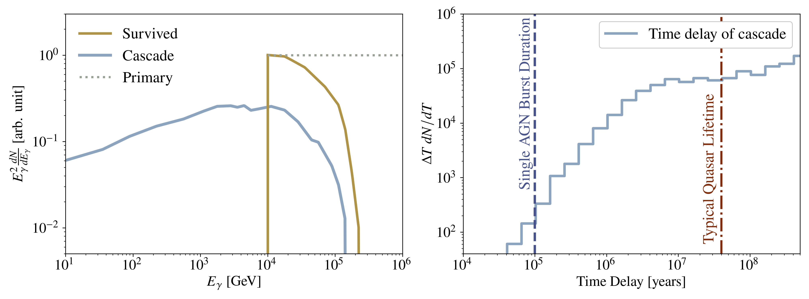
图注：$z=0.1$ 的宇宙纤维传播示例，磁场 30 nG、路径尺度 2 Mpc。左图按 $E^2dN/dE$ 展示 10 TeV–1 PeV 原初注入（点线）、存活原初光子（暗黄色）与逆康普顿级联（蓝色），能量横轴单位 GeV、归一化任意。右图为级联传播延时分布，单位年，两条竖线分别标典型 AGN 单次活动和明亮类星体寿命。
怎么看这张图：先比较左图存活光子的高能截止与级联能量，再看右图延时超过活动时标的部分。示例依赖给定纤维参数，说明可关联成分如何减少。 核查源周围结构对百TeV光子及时间关联的影响
来源与置信度：arXiv HTML；source verified；https://arxiv.org/html/2611.21752v1/figs/filament_test.png
图 5
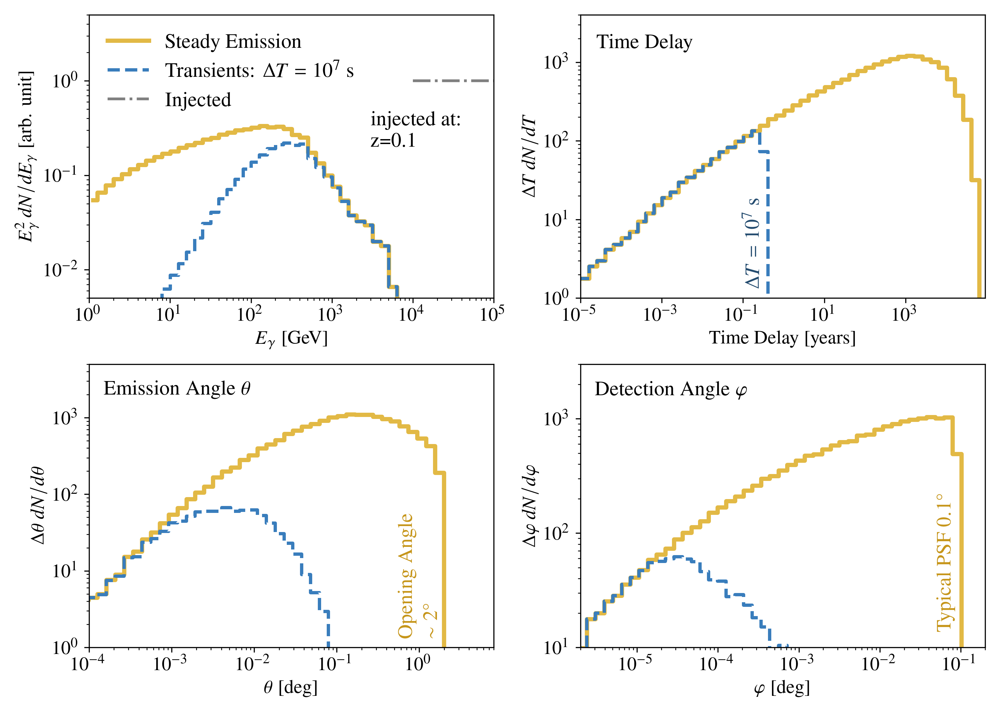
图注：$z=0.1$、10–100 TeV 的 $E^{-2}$ 注入在空洞中的级联分布。左上为能谱，灰点划线是归一化为 1 的注入，黄实线为级联基准，蓝虚线为延时小于 $10^7$ s 的暂现子集。右上为以年计的延时，下左为发射角 $\theta$，下右为接收角 $\varphi$，角单位度；两角分别采用 $2^\circ$、$0.1^\circ$ 基准切。除能谱外其余面板未归一化。
怎么看这张图：沿四面板看低能谱为何随时间切变弱，并比较角分布收窄。正文对稳态也施加两角选择，不能将黄谱理解为全空间全光子的总能量。 把磁偏转、时间选择和可探谱连到同一组模拟
来源与置信度：arXiv HTML；source verified；https://arxiv.org/html/2611.21752v1/figs/Method01_z01.png
图 10
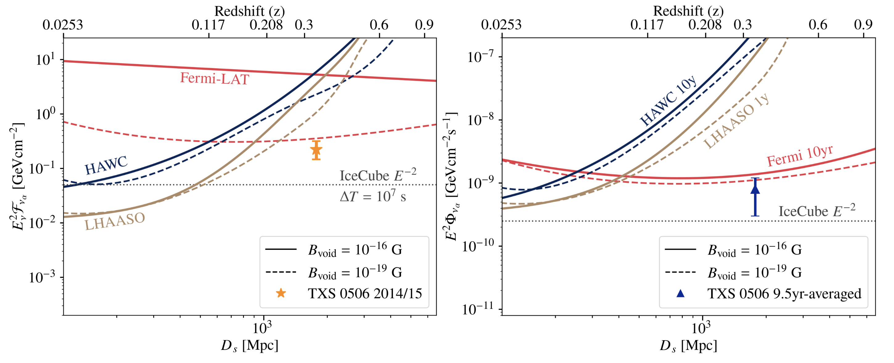
图注：连续 1 TeV–1 PeV、$E^{-2}$ 中微子注入下的伽马级联探测基准。下轴光度距离 Mpc，上轴红移。左为每味中微子流量 $E_\nu^2\mathcal F_{\nu_\alpha}$（GeV cm$^{-2}$），加 $10^7$ s 延时切；右为每味通量 $E_\nu^2\Phi_{\nu_\alpha}$（GeV cm$^{-2}$ s$^{-1}$）。红、蓝、棕为 Fermi-LAT、HAWC、LHAASO 门槛，实、虚线对应 $10^{-16}$、$10^{-19}$ G。黑点线为 IceCube 门槛，橙星与蓝三角标 TXS 0506+056 的 2014/15 活动及 9.5 年均值。
怎么看这张图：给定距离处同时高于彩线和黑线才属于相应联合区。左侧强磁场对低能光子的延时筛选更明显，右侧还依赖不同仪器采用的多年曝光基准。 展示现有设施下距离、磁场和流量/通量的联合可探条件
来源与置信度：arXiv HTML；source verified；https://arxiv.org/html/2611.21752v1/figs/PL.png
图 11
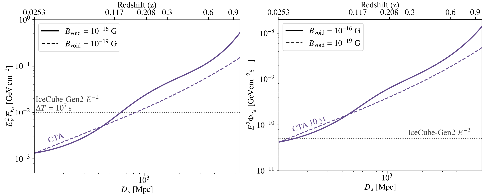
图注：CTA 与 IceCube-Gen2 的联合基准，透明源假设，连续 1 TeV–1 PeV 的 $E^{-2}$ 中微子谱。下轴光度距离 Mpc，上轴红移。左为每味流量（GeV cm$^{-2}$）并施加 $10^7$ s 延时切，右为每味通量（GeV cm$^{-2}$ s$^{-1}$），稳态 CTA 采用十年基准。紫线为 CTA 门槛，实、虚线分别为 $10^{-16}$、$10^{-19}$ G，黑点线为 Gen2 灵敏度；同时位于两线以上才达到联合基准。
怎么看这张图：近源和远源可由不同设施决定瓶颈。十年灵敏度是作者的比较假设，具体IACT目标还需按可观时长、背景和方向重算。 连接IACT与下一代中微子设施的互补性及应用边界
来源与置信度：arXiv HTML；source verified；https://arxiv.org/html/2611.21752v1/figs/PL_CTA.png
强相关工作
Murase、Beacom 与 Takami 已用弥散中微子和伽马背景讨论电磁级联、透明源约束和 TeV 搜索，较早的宇宙网传播工作也说明结构磁场可重处理超高能辐射。本文在这一思路上明确展示距离、时间筛选、角度与两段环境对个别源基准门槛的联合影响。
Aharonian、Coppi 与 Völk 的对晕工作建立了电子对偏转导致扩展伽马辐射的图像。Berezinsky 与 Kalashev 讨论级联谱的普适结构，CRPropa3 提供三维数值基础。本文以这些标准谱形和标度验证自己的实现，作者对 TXS 两个时期的标记是比较参照，尚未完成针对其内部环境的反演。
同一事件 / 同类源线索：
相似工作：
基础理论 / 方法工作：
- https://arxiv.org/abs/astro-ph/9312045
- https://arxiv.org/abs/1603.03989
- https://arxiv.org/abs/1603.07142
相反观点 / 张力线索：
（未提供）
2. Supernova Bounds on Neutrino Dipole Moments from a Modern Perspective
- 来源：arXiv / astro-ph.HE
- 链接：https://arxiv.org/abs/2611.21729
- 作者：Damiano F. G. Fiorillo, Martina La Rosa, Federico Testagrossa, Edoardo Vitagliano
- 公告 / 来源日期：2026-11-18
- 阅读层级：重点精读
- 评分：novelty 8/10，importance 8/10，relevance 9/10，final 9.35/10
- 推荐理由：17:00逐篇摘要初筛：更新超新星产生率与银河磁场后显著收紧Dirac电子中微子偶极矩约束；需核验模型依赖。
中文题目：重审 SN 1987A 的高能端零事件：Dirac 中微子磁矩约束推进到 $4.8\times10^{-13}\mu_B$
做了什么：若 Dirac 中微子具有额外磁偶极矩，原中子星内部的电磁涨落会把左手活性中微子翻转成右手惰性态。后者能带着核心约百 MeV 的能量逃出，再在银河磁场中部分翻回可探测的活性态。作者重算电子与质子两种产生贡献，使用两套现代超新星模型、银河规则磁场及地球内味演化，将信号折叠到 SN 1987A 时 IMB 水切伦科夫探测器的效率和能量分辨率。
IMB 当时未记录重建能量至少 40 MeV 的事件。在忽略标准超新星高能尾的保守计数处理中，90% 置信上限对应预期信号数 2.30。取较冷模型，作者对逐一开启的味基底对角 Dirac 磁矩得到电子味小于 $4.8\times10^{-13}\mu_B$、缪子味小于 $1.2\times10^{-12}\mu_B$、陶味小于 $1.0\times10^{-12}\mu_B$。这里 $\mu_B$ 是玻尔磁子；这些是特定产生、转换与质量性质假设下的上限，未观察到磁矩信号。
为什么重要：经典超新星磁矩约束主要要求额外逃逸能量不会过快冷却新生中子星，因而受超新星内部演化和稀疏时间采样影响。本文利用逃逸粒子翻回后应产生的高能事件，从同一历史观测的另一个角度约束微弱耦合。电子味上限约比文内冷模型的冷却上限严格七倍，相应额外能量损失约束已很小，作者使用标准超新星背景进行微扰计算更有依据。
理论 / 观测 / 仪器方法价值：方法价值在于把等离子体涨落、恒星内部发射、长距离自旋转换和仪器事件数连成可检查的链条。电子和质子提供不同的电磁响应，不能只把某一种散射当全部来源。转换在小磁矩时有简单平方律，在接近饱和时必须用保持幺正的两能级传播。最终比较的是重建能量上的选后事件数，核靶反应、缪子衰变及分辨率都进入限制。
为什么应该关注：对超新星中微子和轻新粒子研究，该文展示了为何少量高能尾事件或其缺失可以比总能量更敏感。相同思路可检验会产生高能活性中微子的其他机制，但应分别计算产生时间和传播延时。下次银河超新星的方向、地球穿行距离与探测器高能背景将决定实际增益，论文对 Super-Kamiokande 和 Hyper-Kamiokande 的质量距离缩放只是前景估计。
展开详细解读：文章讲解、背景、理论、重点章节、图表与相关工作
文章详细讲解
为何出现更高能分量。 活性中微子在致密核心反复散射，通常到较冷的中微子球才脱离，典型观测能量十几 MeV。磁偶极相互作用若把它变成惰性右手态，就可直接带走深处约百 MeV 的粒子。只有随后翻回活性态的部分才会贡献地面高能事件，因此产生和探测之间还有一层概率。
怎样重算产生。 作者用介质极化张量描述电磁涨落及屏蔽。相对论电子提供纵、横向响应，非相对论质子近似为小反冲的电荷散射体，后者主要贡献纵向电场。在线性响应及各自近似下求出发射率，再沿冷、热两套 Garching 一维模型的半径和时间积分，纳入引力红移。
怎样翻回并留下事件。 在银河稀薄介质中，同一质量本征态的左、右手状态几乎简并，横向规则磁场可驱动转换；不同质量本征态之间的转换因质量劈裂被抑制。作者把银河路径分段逐步相乘传播算符，再将不相干质量态穿过约 8600 km 地幔后的味成分折叠到 IMB。
什么限制结果。 主结果假定一次只开启一个味对角 Dirac 磁矩，右手态自由逃出，原中子星采用已有无新冷却反馈的数值背景。冷、热模型提供了不同结果范围，银河规则场变体另检查系统差异。Majorana 跃迁磁矩需要不同的态和探测处理，不能直接套用这组数值。
关键结果是怎么做出来的
两个产生通道都重要。 式（5）与（7）分别给电子、质子的右手态发射率。图 2 和图 3 中两条贡献在原中子星条件下量级相近，支持将两者相加。电子的近似保留高能区的对数主导项，质子用小反冲和 Debye 屏蔽，最内区的轻度简并在简化率中忽略。
温度和化学势怎样进入。 冷模型 SFHo-18.8 与热模型 LS220-20.0 的内部温度峰约 40 和 60 MeV，电子中微子中心化学势约 150 MeV。两者正常中微子总释放能分别约 $1.98$、$3.93\times10^{53}$ erg。高能右手谱对深部条件敏感，中心最大值和一团近似使用的体积平均值须分别理解。
对照冷却上限。 反弹后 1 s，冷模型右手态光度为 $4.01\times10^{51}(\mu_\nu/10^{-12}\mu_B)^2$ erg/s，正常中微子光度为 $4.40\times10^{52}$ erg/s，给约 $3.3\times10^{-12}\mu_B$ 的冷却估计。热模型对应上限约 $2.4\times10^{-12}\mu_B$。作者随后使用全 10 s 的发射谱进行事件计数，正式计数上限不只依据这一时刻。
长路径转换的非线性。 基准银河场的小概率近似给 $P_i=0.072|\mu_{ii}/10^{-13}\mu_B|^2$，在部分受检参数下已不再远小于 1。作者因此求精确两能级演化，避免概率超过 1。简单平方律会使热模型上限过强几个百分点，冷模型可过强约 10%–40%。这也是不能仅凭四次方缩放复算整张表的原因。
事件门槛与各味差别。 IMB 有效水质量 6.8 kt，对应约 $4.5\times10^{32}$ 个氢核和一半数量的氧核。约 70 MeV 以上，电子味在氧核上的带电流反应特别重要。缪子味通道产生的静止衰变电子只到约 53 MeV，过 40 MeV 阈值的比例较有限。电子味冷、热上限分别为 $4.8$、$3.0\times10^{-13}\mu_B$，另外两味结果见表 1，模型差可达约 1.6–2.6 倍。
系统检查与未来预期。 八种规则银河场模型使上限相对基准变化约 $-13\%$ 到 $+4\%$，这个范围没有覆盖所有超新星和磁场假设。假设 10 kpc 超新星且沿用 IMB 响应与 SN 1987A 场积分，Super-K 冷模型电子味前景约 $1.4\times10^{-13}\mu_B$，Hyper-K 可再改善约 1.7 倍。真实高统计热尾、效率、分辨率和方向效应仍需专门分析。
展开背景、理论、公式、模型和章节导读
背景知识
磁矩描述粒子自旋与磁场的耦合。带电电子天然具有玻尔磁子量级的磁矩，中微子虽电中性，也可能经量子修正产生很小的电磁耦合。最小的质量扩展预期非常小，观测到更大磁矩将指向新物理。
对于相对论 Dirac 中微子，弱相互作用主要耦合左手粒子和右手反粒子，另一组螺旋度可近似惰性。超新星磁矩过程改变自旋，打开通常不参与弱散射的逃逸通道。Majorana 的对角磁矩受到不同限制，其翻转态的物理意义也改变。
SN 1987A 位于大麦哲伦云，距离约 49.6 kpc，几台地下探测器记录到了十 MeV 量级中微子。已有分析常用其信号延续数秒来检验异常冷却。本文关注高于标准主峰很多的未见事件，用能谱末端检验另一种可探信号。
核心温度高并不意味着所有离开核心的标准中微子都具有百 MeV 能量。强散射和输运使标准谱由较外层决定。惰性态若自由逃出，就保留更深层信息，但它抵达地球时仍需转换与探测效率才能形成计数。
水切伦科夫探测器由带电轻子辐射的光反演能量。事件的重建能量同时受核反应阈值、轻子衰变、触发效率和光电子统计影响。把源中微子谱直接在 40 MeV 截断，会遗漏这些仪器和反应效应。
基础理论 / 方法脉络
致密等离子体里的电磁场有热和统计涨落，不能把它只看成一个静止平均磁场。极化张量描述带电粒子对外场的响应，其虚部联系涨落与吸收，实部描述屏蔽。磁矩把这些涨落和中微子自旋翻转连起来。
质子较重、运动非相对论，散射时的能量转移小，静电屏蔽给一个天然的低动量截止。电子则高度相对论，可交换能量，纵横响应都需考虑。产生率因振幅正比磁矩而整体含 $\mu_\nu^2$。
离开高密环境后，物质势大幅下降。同一质量态的两种螺旋度真空项相同，仅差整体相位；不同质量态之间却有快相位差。传播由近独立的三组两态系统简化，自旋转换由横向场沿路的幅度和方向共同决定。
核心产生以味标记，真空传播以质量本征态更自然。一次只开启某味磁矩时，质量对角项按 $|U_{\alpha i}|^2$ 分配。长距离消除不同质量态的相干，最后通过地球时仍能发生质量到味的物质效应。
在小磁矩区，产生率与再转换概率各带一个平方，预期事件数近 $\mu_\nu^4$。这使场强、距离或探测器质量误差以四次根进入磁矩限。但转换接近饱和后，必须回到精确概率及完整事件积分。
公式与推导
第一步写出自旋耦合。 原文式（1），以下粒子方程采用 $\hbar=c=1$。$F^{ab}$ 为电磁场强，$\sigma_{ab}=i[\gamma_a,\gamma_b]/2$，$\mu_\nu$ 量纲为能量倒数，以 $\mu_B=e/(2m_e)$ 报告。该项把活性左手场和惰性右手场连接。
再把介质转成产生率。 原文式（6）–（8），展示质子率和电子屏蔽尺度。$k$ 为右手态动量大小，$n_k^L$ 为初始 Fermi 占据，$T$ 是温度，$k_{D,p}$ 是质子 Debye 波数，$\hat\mu_e$ 是化学势，不能与磁矩 $\mu_\nu$ 混同。$\dot{\mathcal N}$ 是相空间占据的产生率；积分相空间后得到每体积每时间的粒子数。
沿恒星时空积分。 原文式（12）、（18）。$z$ 这里表示局地引力红移，$E$ 为远处观察到的能量，$dV$ 为模型体积元，$t$ 按原文积分时间。数值背景提供各时刻 $T$、化学势及红移。所得 $F_R^\alpha$ 的单位是每面积每能量。
银河场驱动两态演化。 原文式（15）和单味设定。$U$ 为 PMNS 混合矩阵，$s$ 为路径，$B=B_1+iB_2$ 为垂直视线的两分量；纵向场不翻转螺旋度。忽略物质势并去掉同一质量态共享的真空相位后，
用幺正传播延伸到大概率。 对应原文 §4 的数值步骤和式（16）。每段近恒定场给矩阵指数，按路径有序相乘。右式仅在转换概率远小于 1 时成立，积分中场的方向可发生抵消。
转为探测器处的味流量。 原文式（19）。$P^\oplus_{i\to\beta}(E)$ 是质量态穿过地球并被测为味 $\beta$ 的概率，真空时为 $|U_{\beta i}|^2$。IMB 的约 8600 km 地幔路径必须另算；反粒子采用各自源谱和反号物质势。
把流量折叠为带电轻子数。 电子通道对应原文式（20），$N_k$ 为该反应靶数，$\sigma_k$ 为截面，$Q_k$ 为有效反应能量差。缪子通道先算总产生数再乘静止衰变谱，后一式为包含靶数的教学写法。不同反应的靶数须各自进入。
重建能量后才施加门槛。 原文式（23）–（25）。$g(E_e)$ 是上一步六种反应相加的真实轻子谱，$\epsilon$ 是效率，$R$ 为 Gaussian 分辨率核。$\sigma_E=\sqrt{E_eE_\sigma}$，$E_\sigma=1.35$ MeV；$N_{\rm sig}$ 最后在重建能量至少 40 MeV 积分。
零事件变为磁矩限。 原文 §6，忽略标准高能背景时 Poisson 的零计数概率为 $e^{-N_{\rm sig}}$，90% 上限解出 2.30。小磁矩区再接上产生和转换两个平方，得到作者未来质量、距离缩放的依据；正式表格仍以完整积分计算。
模型拟合 / 应用方法
背景模型与自由参数。 主分析分别在冷、热数值模型上运行，逐次只开启 $\mu_{\nu_e}$、$\mu_{\nu_\mu}$ 或 $\mu_{\nu_\tau}$。这不是同时拟合任意复矩阵。右手态假设自由流出，产生所带走的能量在受限区域较小，作者以未加额外冷却反馈的背景计算。
发射率近似。 电子用相对论等离子体响应及高于等离子体频率的对数近似，质子忽略横向响应和反冲。附录 A、B 从涨落—耗散关系推至率，屏蔽防止低动量发散；两种带电粒子的贡献均有保留。该方法的适用区间由核心状态和层结决定。
转换和场系统性。 基准用 Unger–Farrar 的规则场，逐段指数传播保概率。八种规则场变体作为一项系统比较，文中另讨论 LMC 和湍流贡献。本文较紧上限依赖磁场积分，实验散射、恒星冷却与这组上限所约束的有效矩组合也并不完全相同。
探测器响应。 使用 IBD、电子味氧核带电流及缪子味相应反应共六通道。轻子效率与能量色散显式卷积，负载通量包括中微子和反中微子。只用 IMB，作者估计加入 Kamiokande-II 会在百分比量级收紧。
统计与未来外推。 把零高能事件对应的 $N=2.30$ 作为 90% 排除准则，标准热尾被忽略使约束偏保守。正文没有用来发现磁矩的似然峰或检测显著性。未来探测器缩放保持同一响应和场积分，尚需真实背景及方向模拟。
重点章节 / 结果段落怎么读
- §1 与图 1 先分清核心的百 MeV 惰性态和中微子球的十 MeV 标准成分，确定为何有两个转换步骤。
- §2、附录 A/B 的式（5）–（8）核电子和质子近似、屏蔽和占据函数，解释图 3 两种贡献。
- §3 看冷、热模型与引力红移，再把 1 s 冷却估计同全 10 s 事件积分分开。
- §4 的式（15）–（19）读质量/味基底和精确概率，检查为何不能让小概率平方律无限增长。
- §5–6、表 1、图 4 将反应靶数、Michel 电子、分辨率和 40 MeV 零事件门槛接上，最后比较 §6.2 的条件性前景。
关键图表与解读
图 1
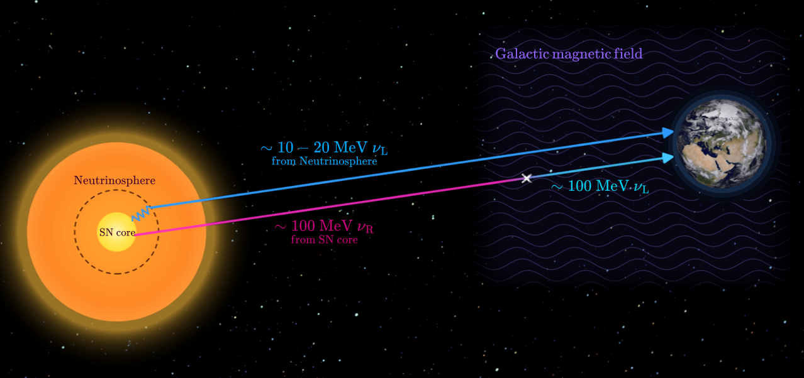
图注：SN 1987A 两种中微子分量的示意图，未按实际比例绘制。核心约百 MeV 的左手中微子先经等离子体电磁涨落翻转为右手态，逃出后在银河磁场中部分转回活性态并抵达 IMB 或 Kamiokande-II。另一条路径表示由中微子球离开的约 10–20 MeV 标准分量。高能活性分量具有更大的相互作用截面。
怎么看这张图：沿核心、银河和地球的顺序追踪两次转换。右手态能逃出后仍需翻回活性态，图中的百MeV箭头没有表示已观测到新分量。 解释零高能事件如何联系核心磁矩过程
来源与置信度：arXiv HTML；source verified；https://arxiv.org/html/2611.21729v1/sketch_SN.png
图 3
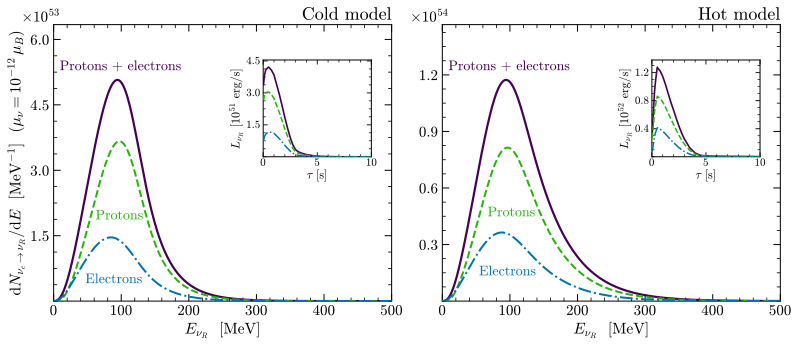
图注：$\nu_e\to\nu_R$ 产生的右手中微子全时积分谱，已换成远处观察到的能量。左为冷模型 SFHo-18.8，右为热模型 LS220-20.0，统一取 $\mu_\nu=10^{-12}\mu_B$。绿色为质子散射贡献，蓝色为电子贡献，紫色为相加总谱。横轴 MeV，纵轴为每 MeV 的粒子数，两面板纵轴量级不同；插图为对应光度随反弹后时间（s）变化。
怎么看这张图：比较两面板前先核纵轴的十倍量级差，再看两种带电粒子贡献。能谱已包含引力红移，温度峰和谱峰应分别按各自定义阅读。 核查电子和质子率及冷/热背景对高能谱的影响
来源与置信度：arXiv HTML；source verified；https://arxiv.org/html/2611.21729v1/redshift_cold_hot_spectra_L.svg
图 4
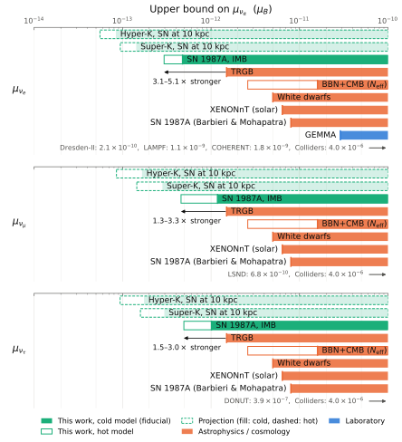
图注：电子、缪子和陶味对角磁偶极矩上限比较，横轴以玻尔磁子 $\mu_B$ 为单位，具体数值、置信水平和适用假设见表 1、2。绿色示本工作的冷、热超新星结果及未来银河超新星探测前景，橙色为其他天体和宇宙学限制，蓝色为实验室限制。未来 Super-K、Hyper-K 项采用 10 kpc 超新星及响应缩放。
怎么看这张图：同一面板比较上限及模型跨度，数值越小约束越紧。未来空心条属于预测，各类实验可能约束不同磁矩组合，不能把图视为对任意矩阵的统一排名。 对照主结果、模型依赖和下一次银河超新星的条件前景
来源与置信度：arXiv HTML；source verified；https://arxiv.org/html/2611.21729v1/bounds.svg
强相关工作
Barbieri–Mohapatra、Lattimer–Cooperstein 和 Nötzold 在 SN 1987A 后已提出核心自旋翻转与银河再转换约束。本文更新的是这条事件计数链的等离子体率、恒星剖面和磁场处理。相较旧的均匀核心与固定场估算，作者逐层积分并纳入现代响应。
Fiorillo 等对 SN 1987A 事件与现代超新星模拟的比较提供了数值背景，利用高能零事件限制衰变为中微子的轻玻色子则提供相近的仪器统计思路。Unger–Farrar 的规则磁场与红巨星顶端冷却约束分别提供传播输入和另一种天体比较，后者依赖恒星能损和磁矩组合，不能以单个数值胜负替代模型条件对照。
同一事件 / 同类源线索：
相似工作：
- https://doi.org/10.1103/PhysRevLett.61.27
- https://doi.org/10.1103/PhysRevLett.61.23
- https://doi.org/10.1103/PhysRevD.38.1658
- https://arxiv.org/abs/2209.11773
基础理论 / 方法工作：
相反观点 / 张力线索：
（未提供）
3. Neutron-Rich Disks, Nickel-Rich Ejecta: Can Direct-Horizon Collapsars Explain Early $r$-Process Enrichment?
- 来源：arXiv / astro-ph.HE
- 链接：https://arxiv.org/abs/2611.21788
- 作者：Danat Issa, Ore Gottlieb
- 公告 / 来源日期：2026-11-18
- 阅读层级：重点精读
- 评分：novelty 8/10，importance 8/10，relevance 8/10，final 9.00/10
- 推荐理由：17:00逐篇摘要初筛：三维GRMHD加中微子输运改变直接塌缩星核合成预期，富镍而贫镧系结论有明确科学增量。
中文题目：富中子的盘为何喷出富镍物质：直接成黑洞塌缩星的核合成窗口
做了什么：质量超过对不稳定质量缺口的恒星可能直接形成黑洞和巨大吸积盘，既有模型因其极高吸积率而预言大量重元素与“超级千新星”。本文把约149个太阳质量的裸氦核先演化到黑洞形成，再接入三维广义相对论磁流体模拟，并联立中微子能量、通量及物质成分的演化。四种预设磁场中，强、弱极向场能够启动喷流；环向场和无磁场在模拟时限内未启动相应喷流。作者随后重建物质轨迹，用核反应网络计算真正抛出物质的元素丰度。
关键结果是“盘富中子”与“抛射富中子”之间存在竞争：强极向场虽能及时搬走物质，也迅速排空盘、解除电子简并，使后来流出物的电子丰度升高。两个极向场模型只产生约0.1—0.3个太阳质量的质量数不小于69的核，其中镧系仅约1.1×10⁻⁵—1.4×10⁻⁴个太阳质量；与此同时产生约0.75—3.6个太阳质量、最终衰变为铁的镍56。它更支持富镍明亮超新星的方向，而非必然出现富镧系超级千新星。数值时空没有随黑洞增长更新，这些产额尤其重元素部分只能视为有重要动力学不确定性的量级估计。
为什么重要：本文具体检验了一个容易被半解析模型略去的环节：盘能合成重核，不保证这些核能够逃出恒星。三维磁应力、中微子弱相互作用和外围回落共同决定逃逸物质的成分；强磁场的帮助与破坏发生在同一系统里。结果没有否定这种塌缩通道能产生r过程元素，而是把“巨大重元素工厂”改成一个短暂、受磁场拓扑限制的窗口，并指出同次事件携带大量铁会限制最终铕铁比。
理论 / 观测 / 仪器方法价值：可借鉴的是分开检查盘的局域平衡、弱反应是否有足够时间发生、物质是否真正不受束缚，再沿轨迹计算核合成。作者以每个核子的俘获次数区分反应冻结与平衡值改变，并对同一轨迹分别开启和关闭中微子吸收；后者使第二峰以后的产额降低约2—3倍。这个证据链比只把盘中低电子丰度映射成重元素质量更可靠，但后处理不反作用于流体，仍不能消除固定时空、初始映射与核加热缺失带来的偏差。
为什么应该关注：对高能暂现源研究，最直接的联系是恒星塌缩发动机、喷流与放射性光学暂现能否同时出现。强场模型约1秒突破恒星，模拟期喷流注入能量约10⁵⁴ erg，提示极高能伽马暴的可能性；这不是对某个暴的拟合。后续应关注允许黑洞质量和自旋变化的全局计算、抛射物速度与成分的空间分层，以及辐射输运能否区分富镍超新星与额外r过程成分，而不能仅凭红外增强就确认超级千新星。
展开详细解读：文章讲解、背景、理论、重点章节、图表与相关工作
文章详细讲解
科学问题是直接成黑洞的极大质量恒星能否在早期宇宙及时制造重r过程元素。它们寿命短，吸积率远高于普通塌缩星，可能解决中子星并合在部分贫金属环境中需要延迟的问题。但重核形成需要低电子丰度，而把盘物质推出深引力势又需要很强的磁应力；两项要求并不自动相容。本文要算的是这一竞争的实际结果，而非仅证明盘能变富中子。
作者先用一维GR1D处理裸氦核塌缩，再将状态映射到三维νH-AMR，起始黑洞为23.9个太阳质量、自旋0.36。旋转剖面是人为选取、有利于形成大盘的一组参数；磁场则分别取强极向、弱极向、环向和零场。M1双矩中微子输运演化电子中微子、电子反中微子及合并的重味种类，因此气体成分既受电子/正电子俘获控制，也受周围中微子辐照改变。
最有力的对照是强场盘很快失去中子富集，而另外三个盘仍然很富中子，却未能把同样的成分有效送到外面。强场启动较早，在约半秒内短暂抓住低电子丰度窗口；弱极向场启动较迟，主要推出已被质子化的盘表面物质。随后核网络给出富镍而贫镧系的抛射物：0.1—0.3个太阳质量的广义r过程产额，不能误读为同量的重镧系。
最重要的局限是三维阶段采用固定Kerr时空。计入的吸积质量显示黑洞约1秒内增长到起始质量三倍以上，但引力势没有相应加深；一些“无束缚”物质可能实际仍会回落。作者还忽略流体中的α粒子复合和核加热，使用单个前身星与有限磁场设置，并将部分轨迹在后处理里延长。因此化学产额、喷流总能量和预计光变都不是精确预报；需要动态时空与辐射输运来检验。
关键结果是怎么做出来的
第一步先固定可比较的恒星与发动机。初始裸氦核250.75个太阳质量，经风损失后塌缩质量约149个太阳质量；实际演化约140个太阳质量的内区。所有模型共用这一天体与人为旋转剖面，因此磁场对照能揭示动力学机制，但不能当成总体恒星族的概率分布。四种模型运行约3.6—6秒，极向场局部加密并检查磁旋转不稳定性解析度。
第二步看吸积、磁通和喷流是否同步。初始吸积率接近每秒一千个太阳质量，随后约按时间的负1到负1.3次幂下降。只有强极向场约1.5秒达到磁阻滞盘状态；弱极向场虽未达到这个饱和磁通，也能发射较弱喷流。环向场在约3.6秒内没有建立足够相干的极向磁通，所以“有磁场”本身并非启动喷流的充分条件。
第三步解释盘成分的改变。图2同时画电子丰度、俘获次数与电子简并边界。强场盘的电子丰度从约0.25向更高值上升时，每个核子仍经历不止一次、甚至多次俘获，因此不能归因于反应来不及发生；变化的是局域平衡值。磁应力加快盘排空、降低密度，解除简并后电子和正电子俘获不再维持同样的中子过剩。中微子吸收进一步升高电子丰度，但盘内主要原因仍是简并解除。
第四步把盘状态与逃逸路径连接。图3显示强场流出物会在较大半径与中子贫乏的回落恒星气体混合；弱场模型则从较高电子丰度的盘表层取材。图4在核网络起点统计物质，而不是直接累计盘内质量：电子丰度低于0.25的质量仅0.013和0.003个太阳质量。它与较大的质量数不小于69的总产额不矛盾，因为后者包含对极端中子富集要求较弱的核。
第五步计算元素丰度。作者重建30万条加权轨迹，剔除初始映射导致的人工激波加热恒星物质与受密度下限影响的喷流物质。SkyNet从峰值温度至少5 GK、最后冷却穿过不高于8 GK的轨迹出发，演化到10⁹秒。强、弱极向场的镧系质量分别约1.4×10⁻⁴和1.1×10⁻⁵个太阳质量；没有模型产生锕系。不开启后续中微子吸收时重核更多，说明成分不能在离开盘的一刻简单冻结。
最后才做天体解释。强、弱极向场分别给出约+0.3与−0.4的铕铁对数丰度比，前提是两类元素被同样保留和混合。均匀稀释可让铁丰度降至约−2.6甚至更低，却不能独自提高铕铁比。预计1—3周达到峰值的富镍暂现来自简化放射性扩散估算，本文没有计算完整多维光变与光谱，也没有解释某个贫金属星的实测丰度。
展开背景、理论、公式、模型和章节导读
背景知识
r过程指中子俘获快于β衰变的核合成过程。重核形成后会衰变，其放射性可为千新星供能；但“产生某些r过程核”并不等同于“大量产生镧系”。质量数约80、130与195的丰度峰反映不同核区，镧系的电子结构又使不透明度显著增加，因此产额的组成会直接改变暂现的颜色和时间尺度。
塌缩星模型由大质量恒星核心形成旋转黑洞和吸积盘，盘的能量与黑洞自旋可供给相对论性喷流。直接成黑洞塌缩星是更极端的延伸，前身超过对不稳定留下的质量缺口，可能保留巨大氦核并有极高吸积率。本文假设氢包层已脱离，不能把模型几秒钟的突破时间套到仍有完整巨大氢包层的恒星。
电子丰度电子丰度是每个重子对应的质子数，在电中性物质里也等于净电子数与重子数之比。高密度、轻度电子简并的盘会通过电子俘获把质子变成中子，降低电子丰度；正电子俘获与中微子吸收则能反向改变它。重要的是密度、温度、辐照与停留时间的共同作用，并非只要吸积率很高就永远保持低电子丰度。
磁场一方面传递角动量，使气体吸积并驱动外流；另一方面加速盘质量流失、改变热状态。极向场有沿旋转轴的磁通，比较容易支撑黑洞喷流；纯环向场需要湍流发电机建立相干极向分量。富中子的盘在没有适当外流时可能把合成材料吞进黑洞，所以盘、风、喷流与恒星包层必须分开讨论。
基础理论 / 方法脉络
理解因果链先从角动量开始。具有足够比角动量的回落气体会在黑洞外圆化成盘，磁旋转不稳定性驱动的应力再让气体向内。作者人为选取有利于形成大盘且初始黑洞较小的旋转剖面，这有助于检验机制，但已经偏向有利于中子化的环境；它不是由恒星演化自洽预测的旋转分布。
第二层是弱相互作用与流动时间的竞争。局域反应很快时，成分由当前温度、电子简并与中微子场决定；反应很慢时，物质保留之前的成分。作者把俘获率乘以实际可用的停留时间，区分“平衡改变”和“反应冻结”。强场模型的电子丰度较早上升发生在俘获仍然高效时，因此核心解释是去简并，而不是单纯来不及冷却。
第三层是中微子输运。M1近似演化辐射能量与通量，并用闭合关系补足压力张量，既避免仅局域冷却对辐照的遗漏，也保留角分布近似。本文采用灰色、能量平均的不透明度并在轨迹后处理修正俘获率；它没有逐能群完整玻尔兹曼输运。盘中光学深度不超过几的设定支撑这一方法的使用，精确核产额仍受谱形近似影响。
第四层是不受束缚与核反应。伯努利参数把气体的热、磁和运动能与引力束缚比较，正值只是给定时空和流动近似下的逃逸诊断。核反应网络需要每条物质的密度、温度、电子丰度和辐照历史，不能只输入某一时刻的盘平均成分。本文的低电子丰度物质还在盘附近停留约秒量级，继续被中微子照射，足以削弱后续重核产额。
引力碎裂则是另一条推断链。低Toomre参数表示盘自引力可能胜过压力与剪切，快速冷却可避免压缩热立刻阻止坍缩；两者同时满足只是碎裂必要诊断。本文没有在动力学里加入自引力，不能声称实际形成了碎片或亚太阳质量中子星，所给Jeans质量只是后续模拟值得检查的量级。
公式与推导
以下由原文定义连接动力学、成分与观测；标为教学补充的关系只解释机制。除明确恢复c的式子外，相对论诊断沿用原文几何单位。首先定义电子丰度并列出改变它的反应：
这是附录C反应的教学整理；\(n_p\)、\(n_n\)为质子与中子数密度。低电子丰度意味着中子多，但具体能否生成镧系还依赖熵和膨胀时间，0.25只是本文使用的经验分界。
把上述反应写成教学用自由核子率方程，有
每个\(\lambda\)是每核子每秒的反应率。正项将中子转为质子，负项反向；令右边为零得到局域平衡值，说明平衡不仅由吸积率决定，也由电子与中微子谱决定。
是否来得及靠近平衡，用原式14的次数诊断：
\(\lambda_{eN}\)为电子与正电子总俘获率，\(t\)为盘年龄，\(r\)与流入速度给出流入时间，两者取小避免给年轻外盘虚构更长反应历史。次数大于1为点火区，大于5的对照说明强场模型的电子丰度上升并非俘获已经完全失效。
从局部到盘平均，原式11—13按密度和固有体积加权：
\(\rho\)为共动静质量密度，\(g\)为度规行列式；盘范围由密度加权厚度定义。该量刻画当时盘的储库，不是最终抛射质量分布，下一步必须检查外流是否无束缚。
原式18采用
\(u_t\)为协变时间四速度分量，\(u_g\)、\(P_g\)为内能密度与气压，\(b^2\)为磁能相关量，\(\rho\)为静质量密度，均沿原文几何单位。它是固定Kerr时空内的能量判据；若黑洞增长改变引力势，正值边缘的物质可能重新受束缚。
原文第四节用弱场估计解释这一敏感性：
左式是黑洞增长增加束缚的量级，右式是每核子约7 MeV复合能可带来的上升。\(X_\alpha\)为α粒子质量分数，低电子丰度物质有\(X_\alpha\le2Y_e\)的限制；因此不能假定缺失的复合加热必然抵消全部黑洞增长效应。
以实际轨迹反应网络结果连接质量分布，教学记号为
\(w_k\)是第\(k\)条轨迹代表的质量，\(X_{A,k}\)为其质量数\(A\)的质量分数。加权和对应本文SkyNet产额；\(A\ge69\)的定义宽于镧系，不应把0.3个太阳质量都称为最重r过程物质。
最后原文将Eu和Fe质量换成相对太阳的数丰度比：
平均原子质量记作\(\bar A\)；共同原子质量单位抵消。相同比例保留与稀释时，该比值不随混入气体质量改变，解释了为何降低Fe/H不自动解决强r过程增强星的Eu/Fe张力。
模型拟合 / 应用方法
本文没有对某个观测样本做统计拟合，方法验收应看初始条件对照、解析度与后处理一致性。GR1D阶段使用LS220状态方程，三维阶段改用Helmholtz状态方程；作者为减小从含包层引力的一维解映射到固定黑洞时空的松弛，重标气压梯度和速度，尽量保留压强平衡与圆化半径。即便如此，仍出现人工激波，必须在产额分析中剔除。
磁场归一化由气压与磁压比设置，中心场强约0.8、0.4和1.5乘10¹⁴ G分别对应强极向、弱极向、环向场。三者拓扑不同，不能仅按中心数字排列“强弱”并解释全部差别。网格在盘区静态加密，附录B检查最快磁旋转不稳定模的质量因子；环向场约0.15秒后才解析其增长，早期差异因此仍要连同数值设置理解。
轨迹是从保存的数据后向重建，并非运行时随流体同步记录。每个模型抽样三组各10万条轨迹，对应早晚穿过提取球的物质与末时刻仍在内区的物质，按各组质量重新加权。后处理重新积分电子丰度，修正中微子吸收谱重标与成对过程混入俘获率两项近似；使用原模拟率时重建电子丰度的中位差不超过约0.003，这是流程一致性检查而非独立证明动力学无偏。
核网络只纳入峰温至少5 GK的轨迹，低温物质没有可靠的初始恒星组成，硬从核统计平衡开始会人为变成铁族。重元素由全部低电子丰度轨迹计算，其他部分抽样；有效贡献重核的轨迹约20和10条，对应约0.1 dex抽样不确定度。这个数小于作者承认的动力学量级误差，不能把抽样误差当成总产额精度。
稳健性方面，附录C改变磁化度分类阈值半个dex，主要改变铁产额而几乎不改变来自盘的铕。这会移动铕铁比，是重要的系统项。更根本的固定黑洞质量、自引力缺失和核热反馈缺失尚未用完整对照修复；论文也没有完整辐射输运、GRB数据拟合或化学演化总体率约束，相关天体联系应保持预测等级。
重点章节 / 结果段落怎么读
先读第二节与表1：弄清一维塌缩如何接到三维固定Kerr时空、旋转和磁场哪些是预设。这样才能判断四模型对照回答的是磁场机制，而非前身星族群率。
第三节第一、二小节连读图1—2：先定位喷流启动和磁阻滞时间，再看盘质量、电子丰度与俘获次数。关键是强场升高电子丰度时反应仍然高效，因而要解释平衡值改变而非简单冻结。
第三节第四、五小节连读图3—5：从盘内低电子丰度切换到真正无束缚轨迹，再到质量数丰度分布。核对每个数字属于总抛射物、网络纳入物质、A≥69还是镧系，避免混用分母。
第四节第一小节与附录C优先于天体外推：固定时空造成的边缘无束缚、人工激波筛选和低温轨迹剔除共同限制产额。最后再读第四节第四至六小节，将富镍暂现、Eu/Fe与稀释条件分别理解，不能互相替代证据。
关键图表与解读
图2
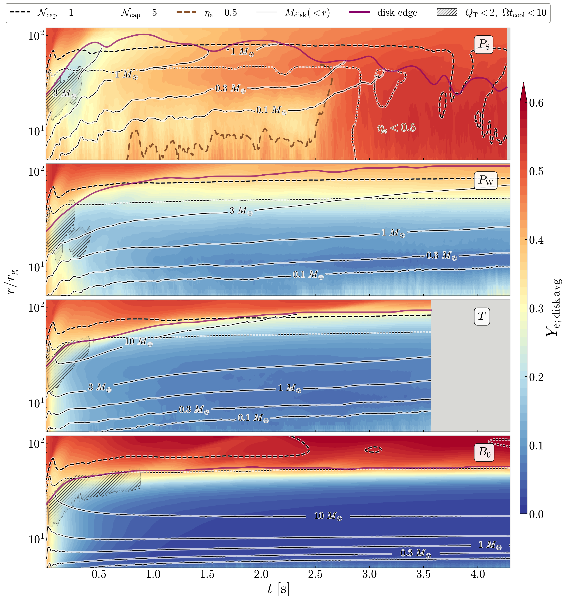
图注：四种磁场设置的盘电子丰度随时间与半径的演化。横轴为时间（秒），纵轴为半径与黑洞引力半径之比；颜色表示密度加权电子丰度，低值为蓝、高值为红。粗、细黑虚线分别表示每核子俘获次数为1与5；强极向场面板中的棕虚线圈出电子简并参数小于0.5的区，紫实线为盘边界，黑实线为盘内包围质量等值线。斜线区同时满足Toomre参数小于2与无量纲冷却时间小于10；灰区缺少数据。
怎么看这张图：比较强极向场与另外三个面板：强场的中子富集很快消失，此时俘获仍然高效，支持平衡值随去简并升高的解释。斜线只是碎裂条件诊断，模拟未含自引力，不能据此认定已产生碎片。 直接检验中子化与磁驱动排空之间的物理竞争。
来源与置信度：arXiv HTML；source verified；https://arxiv.org/html/2611.21788v1/figures/DHC_ye_avg.png
图4
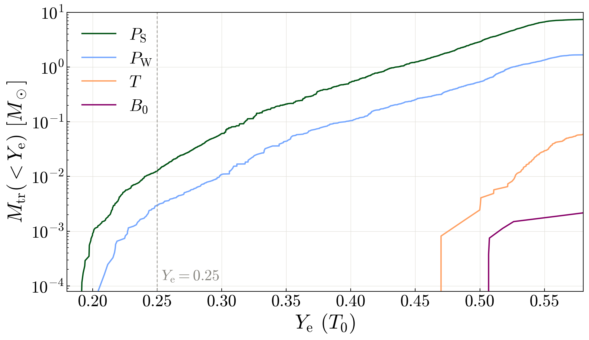
图注：核反应网络起点的累积示踪物质质量分布。横轴为起始温度时的电子丰度，纵轴为低于该值的累计质量（太阳质量），绿、蓝、橙、紫分别为强极向、弱极向、环向、无磁场模型。只计峰温至少5 GK且排除初始松弛激波加热恒星气体的轨迹，在最后穿过不高于8 GK的起始温度时取电子丰度；竖虚线标出0.25。只有两种极向场模型包含该线以下的物质。
怎么看这张图：看0.25处的累计质量，强、弱极向场仅约0.013与0.003个太阳质量。这里统计逃逸轨迹而非盘质量，也不是镧系质量；它解释为何富中子盘未转化成同样大量的重元素抛射。 把盘成分和真正参与核合成的抛射成分明确分开。
来源与置信度：arXiv HTML；source verified；https://arxiv.org/html/2611.21788v1/figures/Munb_vs_Ye_tracers.png
图5
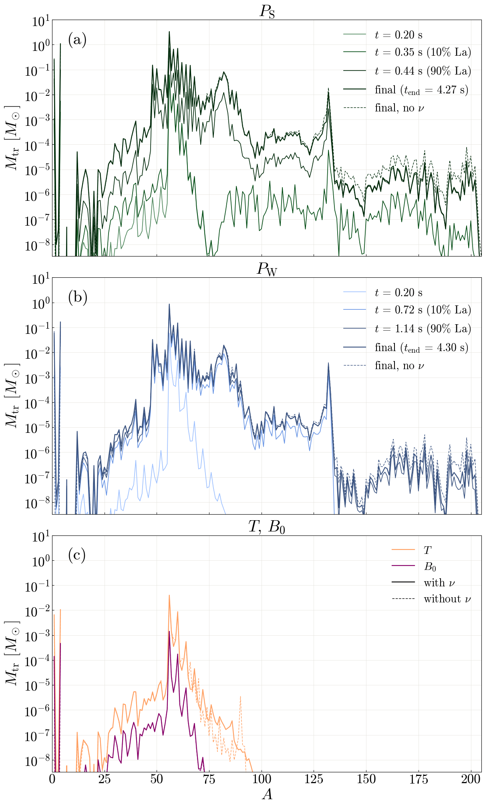
图注：SkyNet计算的无束缚示踪物质核合成产额，横轴为质量数A，纵轴为该质量数对应的质量（太阳质量，对数刻度），排除初始松弛激波加热恒星气体。面板a、b对应强、弱极向场，面板c对应环向和无磁场；粗实线为最终产额，细线为在标记时刻前冷却到网络起点的轨迹贡献，虚线为网络初始化后不含中微子吸收的对照。只有两种极向场模型越过约A=80的第一峰并到达约130和195的第二、三峰。
怎么看这张图：首先比较A=56的高峰与重核尾部，再比较同模型实虚线。后续吸收会抬高电子丰度并压低重核；这些是给定动力学的后处理产额，并非已测量的元素丰度。 给出富镍主导、重r产额有限以及辐照影响的核心证据。
来源与置信度：arXiv HTML；source verified；https://arxiv.org/html/2611.21788v1/figures/total_final_yields_all_models.png
强相关工作
Siegel等的超级千新星模型（2022，DOI：10.3847/1538-4357/ac8d04）是本文直接比较的对象：其半解析图像预期大质量塌缩盘可抛出数个太阳质量的r过程物质。本文加入整个恒星、三维磁应力与中微子输运后，发现盘的确中子化，但逃逸阶段受短窗口和再质子化限制。差别在动力学与成分选择，不能仅说两者预测“重元素很多”。同样，Agarwal等对预设黑洞环面弱相互作用的研究不含整颗恒星，不能替代外围回落与突破检验。
Issa等的普通塌缩星三维中微子GRMHD计算（2025，DOI：10.3847/2041-8213/adc694）已指出磁驱动抛射与中子化之间的竞争，本文将其推进到极高吸积率、直接成黑洞的前身。核合成层面使用Lippuner与Roberts的SkyNet（2017，DOI：10.3847/1538-4365/aa94cb），但标准网络不自动保证输入轨迹可靠；这里新增价值在于沿轨迹追踪辐照、剔除映射伪激波并明确量级限制。相关工作提供方法与机制背景，不代表独立验证了本文每个数值。
同一事件 / 同类源线索：
相似工作：
基础理论 / 方法工作：
相反观点 / 张力线索：
（未提供）
4. An Efficient Method for Directly Integrating the Vlasov Equation in Collisionless and Weakly-Collisional Simulations
- 来源：arXiv / astro-ph.HE
- 链接：https://arxiv.org/abs/2611.23084
- 作者：Philip F. Hopkins
- 公告 / 来源日期：2026-11-18
- 阅读层级：重点精读
- 评分：novelty 8/10，importance 8/10，relevance 8/10，final 9.00/10
- 推荐理由：17:00逐篇摘要初筛：守恒相空间Vlasov新数值方案兼容多流与碰撞极限，公开实现和测试具可复用价值。
中文题目：让每个模拟单元携带多束速度分布：直接求解 Vlasov 方程的拉格朗日方法
做了什么：碰撞很少的暗物质、恒星或宇宙线，能在同一位置沿不同方向运动。Hopkins 提出用随流移动的空间单元承载若干速度分布基函数，每个基函数记录质量、平均速度和各向异性速度弥散，再通过单元边界上的通量交换演化整个分布函数。这把已有粒子代码的空间自适应能力与连续动力学的局部分布信息结合起来，公开实现放在 GIZMO 中。
作者用双流穿越、密度波、碰撞双流、谐振子和自引力 Hernquist 球等问题逐级检验。光滑密度波在所测高分辨率段接近空间二阶收敛，自引力球的局部速度矩比粒子抽样平滑。不过，长时间演化仍有可测的数值热输运和振荡阻尼，效果取决于重构、基函数及分辨率。宇宙线和磁化等离子体属于论文讨论的扩展方向，本文主要验证的仍是非相对论动力学。
为什么重要：许多高能天体模型需要从粒子分布计算辐射和散射率，而局部平均速度不足以描述两股相向粒子流。本文的推进在于给出一种可嵌入现有自适应粒子框架、同时保留多峰分布的求解方式，并把守恒、分布误差和长期数值耗散分别测量。它提供了研究非热粒子输运的计算途径，实际收益仍须在目标物理问题和等计算成本条件下验证。
理论 / 观测 / 仪器方法价值：可复用的是把空间离散、速度分布表示、界面通量、外力和碰撞算符分开实现的流程。特别有价值的检查包括逐面的零净质量通量求根、速度协方差的正定约束、守恒量成对交换，以及在能量几乎守恒时继续测量分布和核心半径的漂移。迁移时需要可控的初始分布、解析或高分辨率基准，并同时扫描空间分辨率和速度基函数数目。
为什么应该关注：对宇宙线加速与输运研究，这种方法有望降低分布函数和低阶角矩的抽样噪声，从而帮助检验缓慢增长的流不稳定性及各向异性散射。若粒子回旋半径没有被分辨，仍需为未解析的散射与不稳定性建立物理算符。本文没有直接计算 LACT 可观测的伽马能谱，下一步应在经过验证的粒子输运问题上连接辐射模块，再判断能否改善源模型推断。
展开详细解读：文章讲解、背景、理论、重点章节、图表与相关工作
文章详细讲解
科学问题是如何用有限计算量描述同一位置上的复杂速度分布。传统模拟常把一个计算粒子作为大量真实粒子的代表，统计分布需在附近粒子中估计；当局部存在多束流或稀薄非热尾部，取样噪声和空间平滑会影响物理诊断。本文让每个空间单元直接携带速度分布，以便在离散演化中保留这些信息。
作者先用可移动的空间体积分解定义单元和有效界面，再将单元内分布写成多个可重叠的基函数。每个基函数具有独立权重、中心速度和速度协方差，因此总分布可以有多个峰。相邻单元通过重构到界面的分布交换质量、动量和应力，外力改变速度分布，碰撞项则单独处理。默认三维实现为每个基函数演化十个独立矩。
关键结果来自逐级测试。均匀双流用于检查流束能否穿越及伽利略变换不变性；密度波暴露界面速度选取造成的单元质量漂移；谐振子将持续振荡与数值阻尼区分；自引力球检验长期平衡和局部速度分布。部分测试显示很好的收敛和平滑度，但自引力的低分辨率结果仍受数值热输运影响，守恒精度不能单独代表分布函数正确。
限制主要来自有限基函数表示、基函数配对、空间重构及碰撞极限处理。更多基函数可提高速度分辨率，也增加界面匹配成本。极强碰撞时，需要在界面通量中恢复流体交换，单独采用无碰撞界面解再施加局部碰撞会产生误差。论文还讨论宇宙线和等离子体应用，电磁场、相对论、未分辨回旋运动等具体耦合仍须另外检验。
关键结果是怎么做出来的
第一步是把比较对象说清。这里的空间分辨率由移动单元数控制，速度分辨率由单元中的基函数数目及其可变中心、宽度控制。给一个单元增加速度基函数会提高每个单元的信息量和计算量，因此作者展示的每单元优势，需要与实际总计算成本一起理解。
第二步先做可解析的双流和密度波。两股冷流分别以正负单位速度运动，整体再加任意平移速度，检验方法能否持续保留相向流。密度波测试中，近似界面速度留下约千分之一级的单元质量漂移，直接求解界面基函数总质量通量为零后，漂移降到约双精度舍入水平。两种选择的短期密度曲线可以很相近，这说明看图吻合与长期守恒检查必须同时做。
第三步分别扫描两种分辨率。密度波测试在固定两个基函数时，把单元数从16增到512，并以同方法1024单元的高分辨率解为主要参考；最高分辨率区间测得约2.1的误差斜率。速度分布重构则把基函数数从1增到128，发现平滑高斯基在部分光滑目标上较快收敛，但非光滑或长尾分布会改变渐近规律。这个证据支持按目标分布选择基函数，不能把单一测试的收敛阶推广到所有分布。
第四步检查碰撞和长期耗散。碰撞双流从自由穿越过渡到双激波结构，强碰撞端与匹配的一维流体计算约百分之一级一致。这里一维二阶矩闭合的有效绝热指数为3，与三维理想气体的常用值不同。谐振子本应永远保持宽度包络，有限分辨率下包络缓慢收缩，直接量化了重构造成的数值阻尼。
第五步进入自引力球。作者以总质量、尺度半径和引力常数归一化的 Hernquist 平衡为基准，对冷启动和热启动进行比较，默认低分辨率示例只有1000个空间单元。总能量和动量达到预期积分精度，速度矩估计比粒子统计更平滑；但高斯基的数值导热可使核心收缩、半质量半径增长，尽管总能量仍很好地守恒。顶帽基减弱这一效应，提高空间分辨率也改善结果。
最后要保留诊断的口径。图20比较的是从壳层内选取若干单元后得到的速度均值与各向异性，阴影来自重复抽样的散布。它有力展示局部分布矩的估计优势，却没有给出相同墙钟时间下所有科学量的普遍加速倍数。数值结果来自作者的测试，本日报核读了方法、主要测试和原图，未重新运行 GIZMO。
展开背景、理论、公式、模型和章节导读
背景知识
Vlasov 方程描述大量粒子在相空间中的连续分布如何演化。相空间同时记录位置和速度，三维问题就有六个连续坐标，再加时间。一次计算要覆盖所有坐标组合，直接使用固定细网格通常非常昂贵，这促使天文模拟发展出粒子抽样和各种降维近似。
无碰撞的含义是粒子间局部碰撞不足以迅速把速度分布压成热平衡形状。引力、洛伦兹力等集体作用仍然存在。两个流束可以经过同一位置而保持不同平均速度，因而单一流体速度和标量压强无法完整携带这一状态，建模时必须保存额外的速度结构。
粒子模拟通过大量代表粒子的轨迹捕获多流，具有成熟的引力和电磁求解工具。不过，要从少量邻居估计局部密度、各向异性或高阶速度矩，会遇到统计噪声与空间平均尺度的取舍。将更多邻居纳入估计可降低噪声，同时也会抹平真实空间变化，尤其影响尖峰、窄束和低密度区域。
连续分布方法的另一类困难是数值扩散。物理上保持锐利的流束或长期振荡，会在离散通量交换中逐渐变宽或衰减。本文利用移动空间分解和随分布运动的速度基函数减少某些平流误差，同时用长期动力学测试暴露残余耗散。理解两类误差的来源，有助于判断某项天文结果需要的分辨率。
基础理论 / 方法脉络
分布函数在本文按单位空间体积、单位速度体积中的质量定义。对速度积分得到质量密度，乘速度后积分得到动量密度，再取二阶矩得到包含整体流动和随机弥散的应力。与只保存一个温度相比，对称速度协方差张量能记录不同方向的展宽及其相关性。
速度分布采用归一化基函数的加权和。权重描述每束流的质量占比，中心速度随动力学变化，协方差描述单束流内部的宽度。即使每个基函数关于自身中心对称，多个不同中心的叠加也能产生偏斜和总热流。因而每基函数的十矩闭合与整个单元只使用一个十矩闭合，表示能力明显不同。
有限体积思想把单元内容的变化转换为界面通量。作者对界面两侧的分布做分段线性重构，再沿速度相对界面的方向积分，分别计算离开两侧的粒子成分。相邻单元用同一通量的一正一负更新，使总质量、动量与能量具有明确的离散守恒结构。自适应时间步及外力积分会改变最终守恒精度，需另行测量。
移动单元的几何速度与每股粒子的速度存在区别。一个单元可以保持总质量，同时内部各束流通过相邻单元交换。为此，界面法向速度通过零总质量通量条件求解，各基函数质量通量则可以非零。这个设计让已有的有限质量粒子框架能够承载多流信息。
所有基函数还要保持物理可实现性。质量权重应非负，速度协方差应为正定或适当的冷流极限。作者设置小质量阈值、协方差特征值检查以及保守的合并拆分操作，同时监测修复的影响。这些操作控制数值不稳定，也会改变未被显式保存的高阶分布信息，仍需在目标问题上检查。
公式与推导
以下按论文式1–16、29–31、40及第5节测试整理；谐振子宽度公式是根据文中初始条件写出的教学表达。先定义质量分布函数及密度，
因此 \(f\) 的单位为质量除以空间体积和速度体积。对非相对论、速度无关的外部加速度，碰撞可作为独立算符，
无碰撞时右边为零。若先按外力更新速度，剩下的是位置平流，随后可以对移动单元做有限体积积分。
单元 \(a\) 内用权重与归一化基函数表示分布，
这里 \(N_b\) 是基函数数，\(w_\alpha\geq0\)。每个基函数的均值和协方差定义为
\(\mathbf{S}\) 的单位是速度平方，可表示各向异性。乘上基函数质量得到保存的守恒变量，
三维对称 \(\mathbf{T}\) 有六个独立分量，加质量和三个动量，共十个量。单元动能是 \(\tfrac12\sum_\alpha{\rm Tr}\,\mathbf{T}_\alpha\)，引力势能另由外力求解器处理。
令 \(q_n=(1,\mathbf{v},\mathbf{v}\mathbf{v}^T)\) 分别代表质量、动量、应力的速度权重。移动界面的矩通量可统一写成
\(f^\ast\) 来自界面两侧的重构及迎风选择，\(\hat{\mathbf n}\) 为单元界面法向。这一步把速度分布转换成可执行的单元更新，
第一式给出成对守恒交换，第二式决定有限质量实现中的界面法向速度。它约束各基函数通量的总和，各流束仍可交换质量。
本文用谐振子检验这种离散演化引入的耗散。取 \(\Phi=\tfrac12\Omega^2x^2\)，初始位置与速度无协方差，可由解析轨道得到
所以包络应在 \(0.7\) 和 \(1.0\) 之间长期保持。数值解偏离这一不衰减包络的程度，可用文中的指数包络模型度量，
\(\tau/T_{\rm orb}\) 越大，给定分辨率下的数值阻尼越弱。这是本测试的误差诊断，不能直接当作真实天体的物理耗散时间。
最后，在自引力测试中，局部速度矩还用各向异性参数诊断，
Hernquist 各向同性平衡应给出 \(\beta=0\)。图20画 \(1-\beta\)，正确基线为1，同时比较速度均值趋近零的程度。这把离散表示、矩通量、守恒与最终天文诊断接成一条可检查的链。
模型拟合 / 应用方法
本文主要进行数值验证。应先确定每个测试的已知解：双流速度与平流密度有解析表达；谐振子有恒定的宽度包络；Hernquist 球有解析密度、势和分布函数。作者选择能分别触发流束交叉、界面求解、碰撞、长时间混合和自引力平衡的初始条件，使失败对应到较具体的算法环节。
空间收敛测试固定足够表示两股流的两个速度基函数，扫描空间单元数。误差主要对照同核、同算法的高分辨率结果，这减少了不同重构核的偏差，但也保留了共同算法误差的可能。速度收敛测试则保持目标分布，扫描基函数数，对比光滑、非光滑和非紧致尾部分布，因此两种收敛试验应分别解读。
谐振子测试将数值宽度包络与不阻尼的解析包络比较，并拟合指数阻尼时间。正文和图注给顶帽基约115个轨道周期、高斯基约41个轨道周期，实际上方图例的顶帽数值约118，属于原文图文之间的近似口径差异；下方图例展示多种限幅与重构变体。这里适合判断哪种数值选择耗散较强，精确复现该拟合还需要作者原始时间序列和拟合区间。
自引力球同时检查总守恒量、密度剖面、包络半径、能量分布和局部速度矩。作者在相同位置样本上重复抽样100次得到图20的中位数及散布。统计带反映这项抽样诊断的波动，各方法携带的状态量不同，因此进一步比较还应固定总运行时间或内存，报告科学量达到目标误差的成本。
最重要的失败诊断是能量近似守恒而核心仍缓慢收缩。论文把它追溯到迎风应力通量中的数值导热，并通过改变重构阶数、基函数、导热项和分辨率交叉检验。单独移除某项导热在已测问题上可减轻漂移，作者也说明缺乏一般稳定性证明。应用中应保存这种消融比较，不能只调整一个选项让目标图看起来稳定。
重点章节 / 结果段落怎么读
第2节先读分布函数定义、速度基函数展开和守恒变量，区分每个基函数的十矩与整个多基函数分布的高阶结构。带着“双流在同一点怎样共存”这个问题看图2。
第3.3–3.6节抓住界面重构、单侧无碰撞通量、基函数配对和零总质量通量求根。重点是界面两侧哪些速度成分流出，以及为什么总质量固定仍允许不同束流在单元间迁移。
第3.8–3.9节检查强碰撞过渡与十矩、十三矩的适用条件。接近 Maxwell 分布的体系可从单基函数更高阶矩获益，强多峰体系通常需要增加独立基函数。
第5.3–5.6节分别看空间单元与速度基函数数目的扫描，记录参考解、误差范数和被改变的变量。接近二阶的空间结果与不同目标分布的速度收敛规律具有不同含义。
第5.11–5.12节是长期可靠性的核心。读谐振子包络、自引力球核心收缩及图20的速度矩，同时核对哪些误差在总能量曲线中并不明显。
第6.7–6.8节与第7节最后读，将宇宙线和磁化等离子体作为待验证的具体应用，列出未分辨散射、回旋尺度和闭合假设，避免把方法讨论直接当作这些体系的已完成性能验证。
关键图表与解读
图2
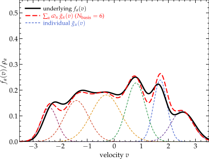
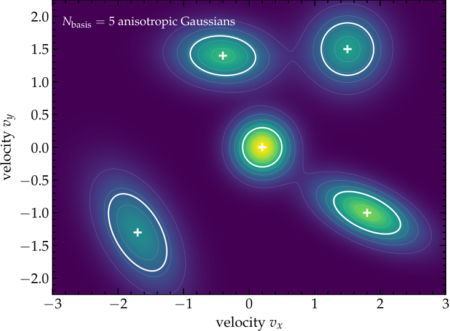
图注：单个空间单元中的速度分布基函数示意。左图横轴为一维速度，纵轴为按单元密度归一化的分布，黑线为目标分布，红线为六个高斯分量的总和，细彩线为各分量。右图横、纵轴为两个速度分量，颜色表示五个各向异性高斯叠加后的分布，白色椭圆和加号分别标记各分量的一倍标准差轮廓和中心。该图用于解释表示方式，属于示意重构。
怎么看这张图：先看右图不同椭圆的方向和宽度，它们说明单个单元可以同时携带多股速度不同、弥散各向异性的粒子流。再看左图的红黑差异，有限基函数仍留下重构误差。此图解释状态表示，具体演化精度还要由后面的测试衡量。 说明多基函数十矩表示的物理含义
来源与置信度：arXiv HTML；source verified；https://arxiv.org/html/2611.23084v1/fig_cartoon_vdf_1d.svg；https://arxiv.org/html/2611.23084v1/fig_cartoon_vdf_2d.png
图16
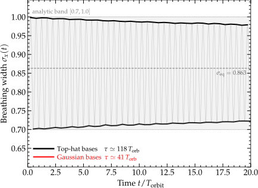
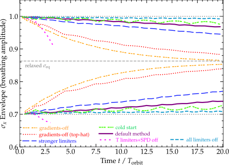
图注：谐振子宽度演化及其数值阻尼。上图横轴为轨道周期数，纵轴为空间宽度；细线是快速呼吸振荡，粗黑线标出包络，水平灰线为充分混合后的平衡宽度约0.863。初始解析包络在0.7与1.0之间。上图图例标注顶帽基阻尼时间约118个轨道周期，而原文正文和图注写约115，高斯基约41。下图横轴同样为轨道周期数，纵轴为宽度包络，彩色图例比较关闭梯度、加强或移除限幅、冷启动等实现变体。原图注将下部概括为高斯基结果，与实际多变体图例的描述有差异，应结合图例和正文第5.11节解读。
怎么看这张图：物理解析解的包络应始终保持，数值曲线向0.863收拢的速度直接反映人工耗散。下图中某些去掉稳定约束的线提前终止，不能把短期低耗散单独视为可靠方案。约115与118的图文差异限制了精确数值引用，这里只用它们比较阻尼量级和实现选择。 展示总守恒以外的长期分布误差及实现稳定性取舍
来源与置信度：arXiv HTML；source verified；https://arxiv.org/html/2611.23084v1/fig_harmonic_breathe.svg；https://arxiv.org/html/2611.23084v1/cbe_harmonic_1d__fig_breathing.svg
图20
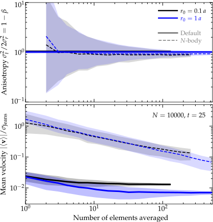
图注：Hernquist 球平衡测试的局部速度矩比较。计算总单元数为一万，演化到归一化时间25。横轴是从壳层中选取并平均的单元数；上图纵轴为1减速度各向异性参数，正确各向同性基线为1，下图纵轴为按Jeans速度弥散归一化的平均速度大小，正确平衡均值为0。黑色与蓝色区分半径0.1和1个尺度半径。粗线为本文方法，细线为传统N体结果，阴影表示重复抽样100次的约一倍标准差范围。
怎么看这张图：上图先看曲线离基线1的距离和阴影宽度，下图则比较平均速度随样本数增加接近0的速度。每个本文方法单元直接携带速度矩，因此小样本也较平滑。横轴按单元数计量，尚需加入每单元更多状态量和计算成本，才能作固定资源下的性能比较。 连接速度分布表示与可用于天文推断的局部动力学诊断
来源与置信度：arXiv HTML；source verified；https://arxiv.org/html/2611.23084v1/fig_hernquist_vsample.svg
强相关工作
论文继承 Hopkins 2015 的无网格有限质量方法，用移动的体积分解和有效界面构造守恒通量。新的内容是让每个空间单元携带多个速度分布基函数，并在界面处匹配这些基函数、计算相空间通量。阅读基础方法有助于判断哪些优点来自原有空间离散，哪些改进来自新增的速度分布表示。
Hahn 与 Angulo 2016 的自适应相空间单元方法是论文讨论的相近路线，它通过相空间几何表示捕获冷流结构。本文选择有限的局部基函数来处理混合和多流，避免在表示高度缠绕的流形时持续增加拓扑复杂度，同时承担有限基函数混合和数值扩散的代价。两者的适用性应结合目标相空间结构判断。
Hernquist 1990 的解析球提供长期自引力基准，Bai 等2019的宇宙线 MHD-PIC 流不稳定性研究则对应论文提出的潜在应用。前者用于检验平衡、速度矩和人工热输运，后者提示降低粒子噪声可能帮助测量弱不稳定性增长。本文尚未在这些具体宇宙线算例上给出完整复现实验。
同一事件 / 同类源线索：
相似工作：
基础理论 / 方法工作：
相反观点 / 张力线索：
（未提供）
相关简报
1. Low-frequency Radio Observation of the Dark PeVatron LHAASO J2108+5157 Using uGMRT. II
- 来源：arXiv / astro-ph.HE
- 链接：https://arxiv.org/abs/2611.22379
- 作者：Gunindra Krishna Mahanta, Subhashis Roy, Sagar Godambe, Bitan Ghosal, Nilay Bhatt, Subir Bhattacharyya
- 公告 / 来源日期：2026-11-18
- 阅读层级：相关简报
- 评分：novelty 7/10，importance 8/10，relevance 10/10，final 9.40/10
- 推荐理由：17:00逐篇摘要初筛：LHAASO暗PeVatron近邻双瓣射电候选和SED直接相关，空间邻近不等于对应体确认。
中文题目：LHAASO J2108附近双瓣射电源：微类星体对应体仍待确认
问题、方法与结论：作者在已有650 MHz观测基础上，以uGMRT补充400 MHz与1.2 GHz观测，确认同一射电源的双瓣形态，并将图像卷积到相同分辨率后分别测量北瓣、南瓣和中心区域的频谱。2023年的650 MHz通量偏离2025年另两频段确定的谱线，局部偏差约3—4个标准差，提示年尺度变化，但尚非同时多频监测确认的变源。作者进一步将射电数据、XMM-Newton上限及已有伽马能谱放在一起，探索双瓣源作为暗PeVatron对应体的可能性。
意义与贡献：双瓣结构为寻找加速器提供具体目标，但“附近没有找到其他候选”不能证明物理关联。纯轻子示例可解释约215 TeV以下能谱，若继续提高电子截止能量以覆盖约537 TeV点，会触及X射线上限；轻子—强子示例以约1.8 PeV质子截止能量覆盖高能端，表明强子解释可行。
可借鉴之处：值得借鉴的是统一射电角分辨率、逐区域测谱，再把未探测上限纳入宽带模型检查。原文明确没有进行卡方拟合，不能把曲线更贴近数据写成统计排除了轻子模型；表2采用1 kpc距离、云密度100 cm⁻³与固定磁场，这些条件直接影响能量预算。
局限与关注点：喷流倾角约87度依赖连续喷流、相对论速度及亮度比假设，不是直接几何测量。正文电子谱指数的正号写法与表2的负号不一致，应按表2读下降谱；从年尺度变化推得小于约1 pc的尺度与SED采用4.3 pc源半径也未建立明确分区对应。距离、微类星体身份、源关联和时变性仍需独立确认，不能称为发现新的强子PeVatron。
图5
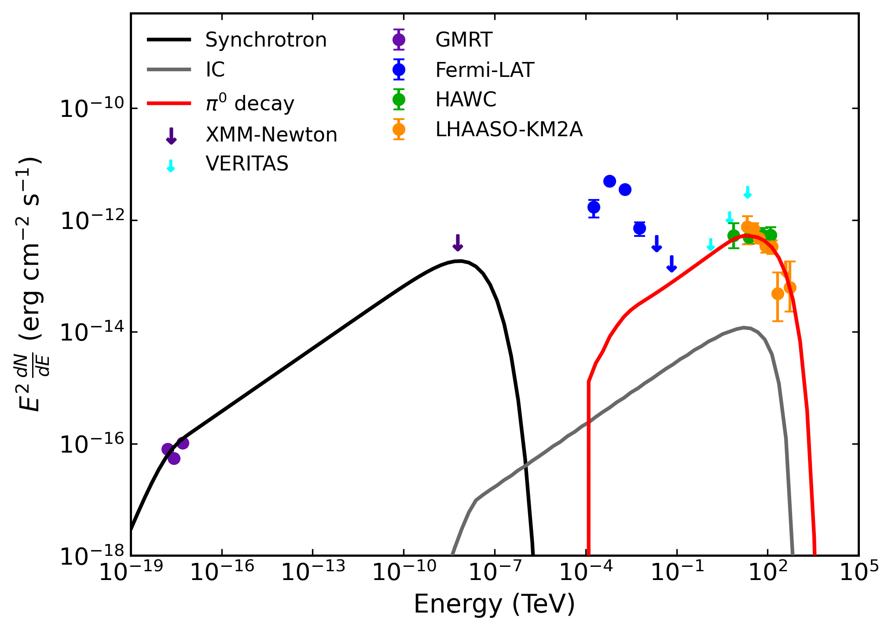
图注：LHAASO J2108+5157的宽带谱能分布。黑色和灰色实线分别表示轻子同步辐射与对宇宙微波背景光子的逆康普顿散射；红线为分子云中中性π介子衰变产生的强子伽马辐射。X射线至超高能数据取自既有文献，射电点来自本次Band3/5与前作Band4。
怎么看这张图：重点比较红色强子分量的高能端与X射线上限；这是一组参数示例，没有统计模型比较，且各波段非同时。 展示作者核心的轻子—强子SED可行性论证及上限约束。
来源与置信度：arXiv HTML；source verified；https://arxiv.org/html/2611.22379v1/SED_plot_Hadronic.png
2. Search for UHE photon sources using direction-time clustering algorithms with a BDT particle discriminant
- 来源：arXiv / astro-ph.HE
- 链接：https://arxiv.org/abs/2611.22833
- 作者：Chaitanya Priyadarshi, Jarosław Stasielak, Nataliia Borodai, Megha Mogarkar, Jan Pękala, Dariusz Góra, Marcus Niechciol
- 公告 / 来源日期：2026-11-18
- 阅读层级：相关简报
- 评分：novelty 7/10，importance 7/10，relevance 10/10，final 9.05/10
- 推荐理由：17:00逐篇摘要初筛：时空聚类叠加BDT改善UHE光子耀发搜索，方法对阵列分析可借鉴但非发现。
中文题目：用时空聚类与BDT标签寻找超高能光子耀发：灵敏度改进与模拟标签的边界
问题、方法与结论：作者把方向、时间和光子判别标签合入逐事件混合似然，在候选连续多重事件的时间窗内拟合信号数，再用打乱数据得到最大检验统计量的背景分布。光子标签来自Auger SD-750响应模拟：在约$10^{17.5}$ eV分别模拟约4500个光子和质子事件，结合簇射最大深度、地面信号分布、波形判别量、台站数及天顶角训练提升决策树（BDT）。注入耀发测试涵盖1小时至10周，完整方法达到$5\sigma$门槛正文概括约需3—7个信号事件（图3端点约3.6—7.6）。
意义与贡献：方法利用“同方向、同时间且像光子”的联合信息，能降低只作空间搜索时的背景。不过这项工作没有发现超高能光子源：1092个目标中最终完成372个分析，未出现超过$3\sigma$的源；415个目标拟合失败，另305个背景重建不足，不能把结果当作完整天空约束。
可借鉴之处：对IACT或地面阵列可借鉴的是把分类器输出概率密度放入似然，而非仅用硬阈值筛事件；候选事件只负责定义时间窗，似然仍包含全部事件。显著性须用同样扫描流程的打乱样本校准，迁移时还要纳入仪器真实曝光、能量和方向依赖。
局限与关注点：最关键限制在正文第5节：所谓真实数据示范的BDT标签仍按“全部为质子”的假设随机赋值，并非逐个实测簇射的光子判别值。因此结果证明的是搜索流程可运行，不能视为真实光子识别或可靠通量上限。模拟只用单能量、质子背景；观测可见性仍待完善，分类器优势不能直接移植为LACT灵敏度增益。
图3
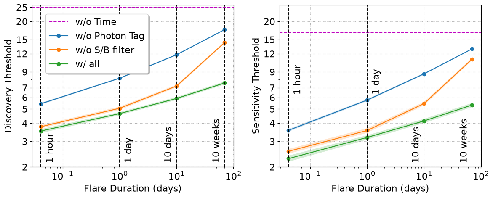
图注：蒙特卡洛测试中的耀发发现门槛（左）和灵敏度门槛（右）随耀发持续时间的变化。横轴为天，纵轴为门槛所需事件数；黑色竖虚线标记1小时、1天、10天和10周。洋红虚线去掉时间信息，蓝线去掉光子标签，橙线去掉信噪比预筛，绿线包含全部组成项。原图未在图注中解释窄色带的统计定义。
怎么看这张图：同一持续时间下比较纵轴，绿线最低。正文将5sigma门槛概括为3—7个事件，但图中绿线端点约3.6—7.6；保留其近似差异。门槛来自注入测试，不是实际光子耀发发现。 直接支持时空和分类标签联合使用带来的灵敏度改进。
来源与置信度：arXiv HTML；source verified；https://arxiv.org/html/2611.22833v1/images/Final_thresh_comp_wo_time_w_wo_photon_tag_c4_v4.png
3. ASAS-SN Rates V: Tidal Disruption Event Volumetric Rates and Luminosity Functions by Optical Spectroscopic Type, X-ray Luminosity, and Host-Galaxy Properties
- 来源：arXiv / astro-ph.HE
- 链接：https://arxiv.org/abs/2611.21731
- 作者：Dhvanil D. Desai, Jason T. Hinkle, Benjamin J. Shappee, Christopher S. Kochanek, K. Z. Stanek, Margaret Shepherd, Yashasvi Moon, John F. Beacom
- 公告 / 来源日期：2026-11-18
- 阅读层级：相关简报
- 评分：novelty 7/10，importance 8/10，relevance 8/10，final 8.70/10
- 推荐理由：17:00逐篇摘要初筛：21个TDE注入恢复率与子类光度函数给出可用新约束，小样本和统一模型推断需区分。
中文题目：ASAS-SN十一年潮汐瓦解率：选择校正后的子类与宿主差异
问题、方法与结论：作者汇集ASAS-SN在2014—2024年发现或独立恢复的25个潮汐瓦解事件，按峰值g星等小于18、银纬绝对值大于15度和红移不超过0.12筛成21例。每例采用自身光变模板，注入真实巡天采样与噪声，再校正可见体积和逐年光谱分类完整度，得到局域光学事件率约210±85 yr⁻¹ Gpc⁻³（H₀=70口径）。校正后H与He兼具的子类占约96.6%，显示原始发现数不能直接代表真实子类比例。
意义与贡献：本工作的增量在同一巡天内同时比较光谱子类、X射线强弱和宿主环境。质量与红移匹配的星系对照给出后星暴宿主每星系增强约15倍，但这类稀少宿主并不主导体积总率；X射线强弱两组的光学光度函数相近，支持视角统一图像，尚不能唯一证明该机制。
可借鉴之处：可借鉴的是将逐事件注入恢复、体积权重与分类效率分开处理，并用联合泊松自助法保留子类率与总率的相关性。普通重复系统按每个系统一次得到约9%的比例；若按每次耀发计数会显著改变结果，开展多信使源族群估计时应先统一分母。
局限与关注点：样本仅21例，最暗的一例贡献约27%总权重，光度函数暗端是否转折仍不确定。MOSFiT外推形状、未校正的宿主消光及不均匀X射线覆盖均限制解释；观测最大X射线光度未必是真正峰值。高光度核暂现与本光度函数外推相容，只是来源假说的支持，不能据此确认都是潮汐瓦解，也不能推广到被尘埃遮蔽的全部事件。
图3
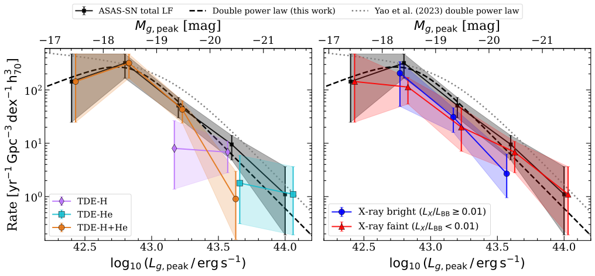
图注：ASAS-SN的g波段潮汐瓦解光度函数。横轴为峰值光度的常用对数（erg/s），顶轴为g绝对星等；纵轴为每年、每立方Gpc、每dex的体积发生率，并保留H₀=70的归一化。左面按光谱类型分为H（紫）、He（青）和H+He（橙），右面按X射线与黑体光度比是否达到0.01分为亮（蓝）与暗（红）；黑点和连接为总率，黑虚线为本样本双幂律拟合，灰点线为ZTF对照。误差按文中的泊松/自助法口径，各子类点略错开以易读。
怎么看这张图：左面显示低光度端由H+He主导，右面两组在现有误差下相近。暗端仅单个事件强烈影响权重，不能把曲线转折或两组相似解读为精确机制判决。 一张图同时呈现经选择校正后的子类差别与X射线统一图像检验。
来源与置信度：arXiv HTML；source verified；https://arxiv.org/html/2611.21731v1/lum_func_by_spec_type_and_xray.svg
4. Properties of Chromium and Manganese in Tycho's SNR with XRISM/Resolve
- 来源：arXiv / astro-ph.HE
- 链接：https://arxiv.org/abs/2611.22471
- 作者：R. Giuffrida, A. Decourchelle, L. Godinaud, T. Tanaka, G. Ferrand, J. Ballet, T. Holland-Ashford, C. Badenes
- 公告 / 来源日期：2026-11-18
- 阅读层级：相关简报
- 评分：novelty 7/10，importance 8/10，relevance 8/10，final 8.70/10
- 推荐理由：17:00逐篇摘要初筛：Resolve空间分辨Cr/Mn线检验Ia核合成，存在多模型兼容与金属丰度张力。
中文题目：XRISM分辨Tycho遗迹的铬锰谱线：爆炸模型仍有金属丰度张力
问题、方法与结论：作者分析Tycho超新星遗迹五个XRISM/Resolve指向，以高斯谱线检查铬、锰的空间分布，再用前后两侧的非平衡电离激波等离子体拟合铁族发射。四个区域联合拟合得到Cr/Fe=0.026±0.006、Mn/Fe=0.026±0.007和Mn/Cr=1.0±0.3，误差为90%置信区间。锰铁比约为部分Suzaku旧测量的两倍，铬铁比则相容；这些是已观测受激波加热区域的平均值，并非整个遗迹总产额。
意义与贡献：铬锰对中子过剩及燃烧条件敏感，能补充硅铁比对Ia型爆炸的诊断。所测比例不支持文中选用的纯爆燃模型；一维近钱德拉塞卡质量延迟爆轰及约一个太阳质量的亚钱德拉塞卡爆轰可兼容，但通常要求偏高的初始金属丰度，未能唯一选定前身或机制。
可借鉴之处：方法价值是分别给热铁族和非热同步辐射使用各自空间模板计算响应，减少不同形态混合的偏差，并以比例避开绝对丰度与发射量的退化。多元素和被激波加热质量份额要联合比较；不能只用Mn/Cr换算金属丰度后便当成直接测量。
局限与关注点：电子温度固定为10 keV，铬锰假定与铁共等离子体且前后丰度相同；约1.7角分点扩散仍混合区域。南部短曝光未达3σ不能解释为缺少元素，局部谱线门槛也不是全图搜索的全局显著性。镍未达3σ，联合Ni/Fe上限约4%；碳缓烧或尚未受激波加热的内层镍等解释仍需更完整覆盖和三维模型验证。
图8
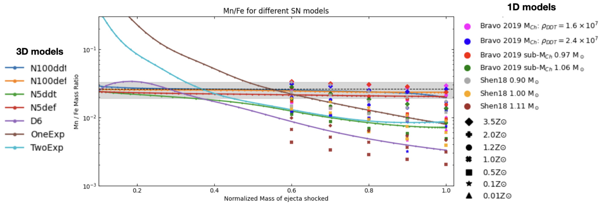
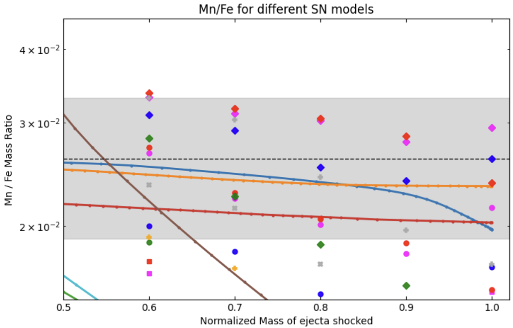
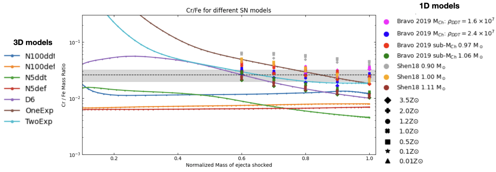
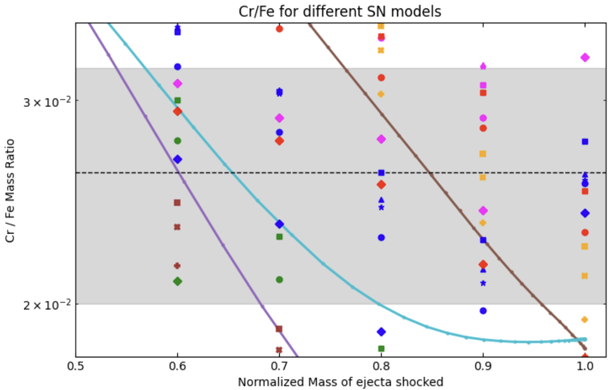
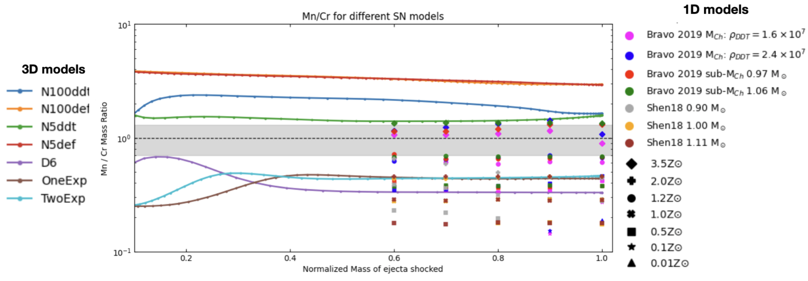
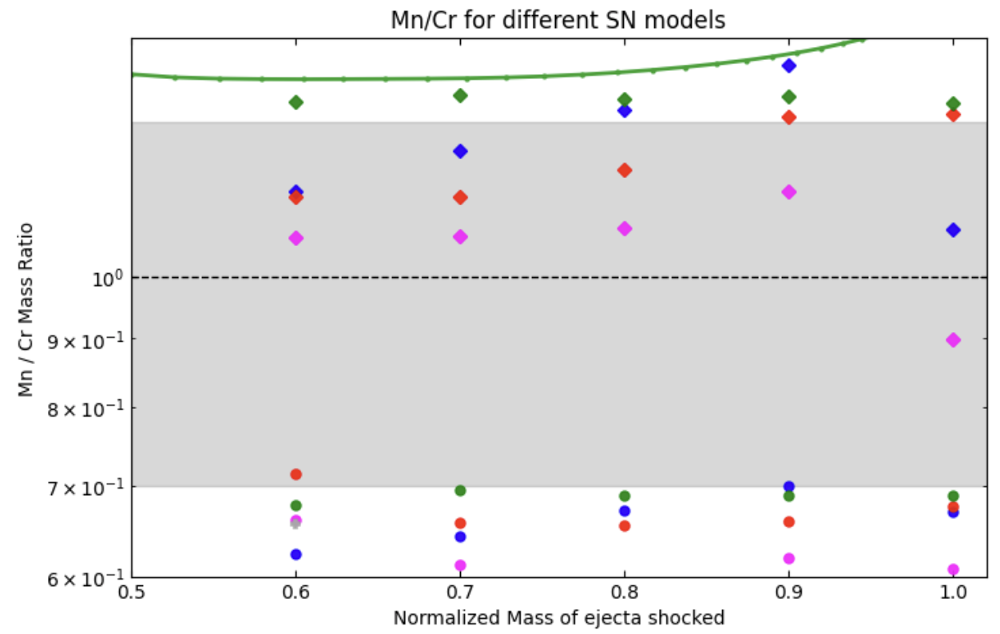
图注：观测质量比与Ia型超新星模型比较：自上而下为Mn/Fe、Cr/Fe、Mn/Cr，均为无量纲；横轴为被反向激波加热的抛射质量份额，左列给完整范围，右列放大观测附近。灰带为多指向联合分析的90%置信区间，黑虚线为中心值；彩色连续线对应三维模型，离散符号对应不同质量、爆轰转换密度及初始金属丰度的一维模型，符号形状区分金属丰度。
怎么看这张图：要让同一模型同时穿过三行的灰带，不能只挑其中一个元素比。高初始金属丰度可改善部分模型，但与Tycho位置的预期有张力；当前对照是有限的模型库，不是整个爆炸机制空间的排除检验。 汇总三元素比对多种爆炸方案的约束与退化。
来源与置信度：arXiv HTML；source verified；https://arxiv.org/html/2611.22471v1/images/Mn_over_Fe.png；https://arxiv.org/html/2611.22471v1/images/zoomMnFe.png；https://arxiv.org/html/2611.22471v1/images/Cr_over_Fe.png；https://arxiv.org/html/2611.22471v1/images/zoomCrFe.png；https://arxiv.org/html/2611.22471v1/images/Mn_over_Cr.png；https://arxiv.org/html/2611.22471v1/images/ZoomMnCr.png
5. Shocks and Trails in the Circumgalactic Medium Driven by Runaway Supermassive Black Holes
- 来源：arXiv / astro-ph.HE
- 链接：https://arxiv.org/abs/2611.21738
- 作者：Kung-Yi Su, Claude-André Faucher-Giguère
- 公告 / 来源日期：2026-11-18
- 阅读层级：相关简报
- 评分：novelty 8/10，importance 7/10，relevance 8/10，final 8.65/10
- 推荐理由：17:00逐篇摘要初筛：逃逸黑洞弓激波受控模拟排除纯引力驱动并约束风和CGM湍动；解释仍依赖单源与环境。
中文题目：逃逸黑洞拖尾需要怎样的风：弓激波与晕气体湍动的受控检验
问题、方法与结论：针对红移0.96的RBH-1候选体约60 kpc长拖尾和千秒差距弓激波，作者用GIZMO模拟一个两千万太阳质量黑洞以1000 km/s穿过均匀热气体，并扫描预设风速、动量通量和时间历史。纯引力只能影响远小于观测的尺度；随黑洞移动的风可维持类似形态，关闭约3 Myr后激波便显著弥散。较成功模型采用3000 km/s风、近期动量通量6×10³² dyn，并随环境密度相对10⁻³ cm⁻³线性缩放。
意义与贡献：这把“高速黑洞能形成弓激波”的直觉改成供能要求：存在运动不够，还需持续或近期机械反馈。温度10⁶ K的模型中，接近直线的拖尾对应一维湍动速度约不超过30 km/s，提示此类结构可探查微弱星系晕气体运动，但这是特定模型内的形态约束。
可借鉴之处：值得借鉴的是在相同动量通量下改变风速，分开检验激波大小与内部温度，再用密度—通量同步缩放揭示退化。作者核对携带吸积盘与核星团的质量、动量和时限预算：约1%爱丁顿吸积有供能可能，普通星团在离开星系约60 Myr后仍提供强反馈较困难。
局限与关注点：风和吸积均为外加处方，没有自洽解析发动机；均匀介质及有限湍流试验也未包括磁场、宇宙线或大尺度梯度。模拟分辨率不足以描述观测发光的冷相，未生成HST/JWST发射线图，所以形态相似不是辐射拟合或逃逸黑洞身份的独立确认。总风质量约3.5×10⁵个太阳质量依赖近期增强历史和环境密度，不能当成实测。
图7
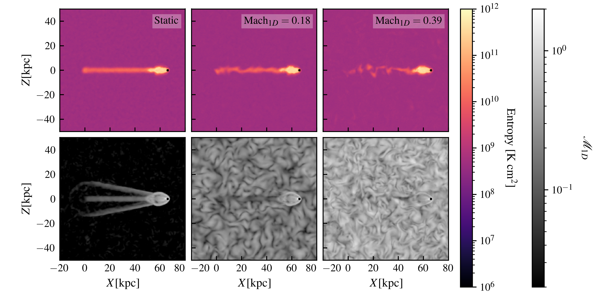
图注：相同风动量通量与风速、不同环境湍流水平的形态对照。上排彩色表示熵（K cm²），下排灰度表示一维马赫数；横纵坐标为X、Z（kpc），黑点标出黑洞位置。三列依次为静止环境、一维马赫数中位数0.18和0.39，沿用较成功的低密度、晚期增强风模型。原文将温度10⁶ K下约0.18对应到约30 km/s的湍动速度界限。
怎么看这张图：比较拖尾的直线程度及横向弯折，较强搅动使拖尾更扰乱。它支持用形态限制环境运动的想法，但未模拟观测冷相及发射线，也不是具严格置信区间的湍流测量。 展示论文新增的晕气体湍动诊断及其模型依赖。
来源与置信度：arXiv HTML；source verified；https://arxiv.org/html/2611.21738v1/figures/cos_morph_test_turb2.png
6. Relativistic tidal excitation of g- and i-modes in neutron star binaries
- 来源：arXiv / astro-ph.HE
- 链接：https://arxiv.org/abs/2611.22417
- 作者：Binyu Zhong, Zhiqiang Miao, Zhen Pan, Huan Yang
- 公告 / 来源日期：2026-11-18
- 阅读层级：相关简报
- 评分：novelty 8/10，importance 8/10，relevance 7/10，final 8.65/10
- 推荐理由：17:00逐篇摘要初筛：相对论规范不变潮汐耦合解决模激发估计差异并给可探测性边界。
中文题目：相对论潮汐共振重估：中子星内部模态的引力波可见性
问题、方法与结论：双中子星的潮汐驱动经过恒星振荡频率时会抽取轨道能量，留下引力波相位变化。作者以完整流体—度规扰动的散射响应作为基准，在相同参数化恒星模型中比较浮力g模、壳核与壳海界面模以及强子—夸克界面模。散射耦合与若干近似在低频较相近，高频夸克界面模可差数十个百分点；频率与耦合必须成对计算，不能拼接各自最有利的数值来放大信号。
意义与贡献：文章将可见性分歧分解为实际模耦合和观测阈值两个环节。在所扫模型中，g模与强子—夸克界面模均低于下一代探测门槛；高剪切速度的壳核模最有希望，若触发壳层熔化，预计总相移约0.05—0.3弧度，可超过ET与CE的预报阈值。这是特定模型预测，不是实测共振。
可借鉴之处：可借鉴的是在Fisher信息矩阵中同时边缘化潮汐参数、并合时刻、相位和共振频率。单看共振后相位容易把变化吸收到并合时刻与相位，必须比较共振两侧；完整参数退化使误差通常比假定其他参数已知的分段信噪估计高约一个量级。
局限与关注点：预报采用100 Mpc、正面朝向、最佳天线响应的1.4+1.4太阳质量无自旋双星，并非平均探测率或严格发现显著性。分层、弹性和密度跃变被分开参数化，尚未含统一微观物态或超流；熔化应变仍用牛顿振幅方程及假设破坏阈值0.1，而耦合来自相对论计算，不能称整条熔化演化完全相对论自洽。
图4
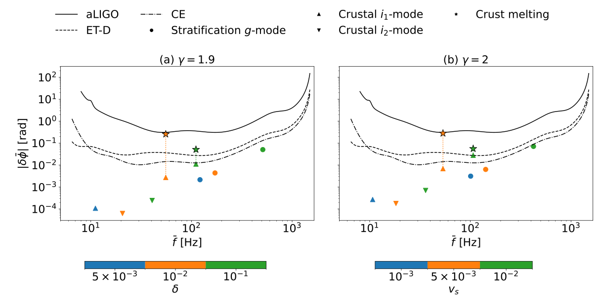
图注：分层浮力g模和弹性壳层界面模的共振总相移。横轴为有效共振频率（Hz），纵轴为相移绝对值（弧度），均为对数刻度；面板a、b分别为多方指数1.9与2的恒星族。圆点表示g模、向上和向下三角分别为壳核与壳海界面模，星号表示壳层熔化。颜色对g模表示分层强度、对界面模表示剪切速度，见下方两条色标；三条探测器曲线给边缘化Fisher相位误差，点高于曲线为潜在可见。低于5 Hz的模未画出。
怎么看这张图：先比较同一物理模型对应的频率和相移，再看是否超过曲线。壳层熔化提高部分高剪切模型的前景，g模仍偏弱；图中的一倍误差门槛和最佳朝向设定不能直接当作群体探测率或确定发现。 同时展示物理信号大小与保留参数退化后的观测边界。
来源与置信度：arXiv HTML；source verified；https://arxiv.org/html/2611.22417v1/phase_shift_and_sensitivity.svg
7. \texttt{StochAXtic}: a JAX-Accelerated, End-to-End Differentiable Framework for Gravitational-Wave Backgrounds from Compact Binary Populations
- 来源：arXiv / astro-ph.HE
- 链接：https://arxiv.org/abs/2611.22999
- 作者：Haowen Zhong, Ethan Vislosky, Emanuele Berti
- 公告 / 来源日期：2026-11-18
- 阅读层级：相关简报
- 评分：novelty 8/10，importance 7/10，relevance 8/10，final 8.65/10
- 推荐理由：17:00逐篇摘要初筛：波形尺度不变加FFT/SVD实现可微快速背景计算，数值误差可核验，暂无新天体约束。
中文题目：StochAXtic：把双星引力波背景计算变成可微卷积
问题、方法与结论：每次改变致密双星族群参数都重新生成大量波形，会拖慢随机引力波背景的推断。作者利用固定质量比、自旋与潮汐形变时的波形尺度不变性，先生成独立于族群的波形强度表，再把质量与红移积分写成快速傅里叶卷积，用截断奇异值分解压缩表格。JAX实现能对族群参数求梯度；论文报告缓存建立后的谱计算约需数毫秒，数值收敛检验在1 kHz内变化小于千分之一。
意义与贡献：贡献是允许在采样中反复计算包含并合、振铃、自旋和潮汐效应的背景平均谱，而无需始终采用频率三分之二次幂的简化。与popstock的无自旋双黑洞、无自旋无潮汐双中子星对照在其蒙特卡洛误差内一致；这项一致性不能延伸成所有物理选项均经独立代码验证。
可借鉴之处：可借鉴的是先寻找物理缩放，再分离不随族群改变的昂贵核；压缩前逐行归一化避免强振铃小信号被低频大振幅淹没。网格边缘经子采样和逻辑函数平滑以保持梯度，收敛检验分别改变网格、质量比节点、压缩阶数和自旋抽样。
局限与关注点：当前假设质量、红移、自旋等分布可分离，不处理随红移演化的质量族群；表格必须覆盖整个先验支持域。数毫秒不含预计算成本，也不是通用硬件保证。四参数恢复只是简化噪声的演示，尚非真实探测器推断；程序只算平均谱，未给出源族群依赖的完整交叉相关统计分布，因此不能凭数值误差小就宣称真实背景分析已足够精确。
图7
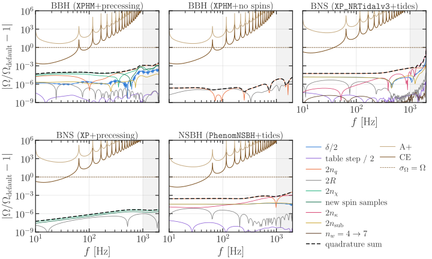
图注：StochAXtic的数值收敛检验，横轴为频率（Hz），纵轴为加密后与默认背景谱之比减一的绝对值。各曲线一次加密一个分辨率参数，重新自旋抽样项改变Sobol扰乱；黑虚线为各项平方和的平方根。棕线比较一年观测、0.25 Hz分箱、Hanford—Livingston基线位置在A+或CE灵敏度下的统计噪声相对大小。五个面板分别对应双黑洞含/不含进动、双中子星含潮汐/进动及中子星—黑洞含潮汐的波形设置。
怎么看这张图：先比较各加密项和黑虚线，再与指定观测设置的噪声比较。图检验的是离散与压缩误差，未包括族群模型、波形物理和真实噪声似然偏差；单箱噪声远大于数值变化，也不自动保证所有参数推断无偏。 直接支撑快速数值算法的精度及其适用范围。
来源与置信度：arXiv HTML；source verified；https://arxiv.org/html/2611.22999v1/convergence.svg
8. Flash UV Spectroscopy: Decoding the Ultraviolet Diversity of Young Core-Collapse Supernovae with the Hubble Space Telescope
- 来源：arXiv / astro-ph.HE
- 链接：https://arxiv.org/abs/2611.21742
- 作者：W. V. Jacobson-Galán, R. J. Yete, L. Dessart, J. Sollerman, M. R. Siebert, N. Rehemtulla, K. K. Das, R. Margutti
- 公告 / 来源日期：2026-11-18
- 阅读层级：相关简报
- 评分：novelty 7/10，importance 8/10，relevance 7/10，final 8.35/10
- 推荐理由：17:00逐篇摘要初筛：扩充早期UV超新星样本并检验非LTE星周介质模型，方向相关性中等。
中文题目：年轻超新星的紫外谱为何不同？HST 早期样本联结外层抛射物与临终失质量
问题、方法与结论：作者汇集19颗核心坍缩超新星的早期HST紫外谱，其中11颗为新公布对象，覆盖II、IIb、IIn和一颗超亮I型，并配合光学、近红外和测光，用非局域热平衡辐射输运模型比较。多数II型的金属P-Cygni轮廓可由低密度星周物质及约 $0.6$–$1.2\times10^{51}$ erg 爆炸模型描述。2024faq、2023ixf更支持较致密且受限的星周物质，IIn型则需要更延展的高密环境。部分对象紫外连续谱比同龄模型更热，提示前身半径或额外相互作用供能仍需调整。
意义与贡献：紫外谱含有大量金属共振线，能补充光学复合线对激波前气体、冷密壳和最外抛射层的诊断。论文将早期HST样本规模扩大约2.4倍，并显示光学拟合相近的对象在紫外仍会暴露模型失配，有助于区分爆炸能量和星周结构。
可借鉴之处：值得借鉴的是先用同龄紫外与光学联合比对，再显式扫描模型相位与宿主消光。2022wsp、2021yja在约10天观测时仍需约6.5–7天的较热模型，降低消光也无法恢复同龄匹配。这比直接将偏蓝颜色归为低消光更能检验模型边界。
局限与关注点：样本受目标机会响应、亮度和消光限制，无法给出总体前身失质量分布。模型网格未逐颗定制，金属丰度、半径、能量和几何仍退化；球对称模型过强的紫外线只提示多维效应等缺项。文中失质量率是固定风速下的模型环境参数，不能视为每颗星临终失质量的独立精密测量。
图 10
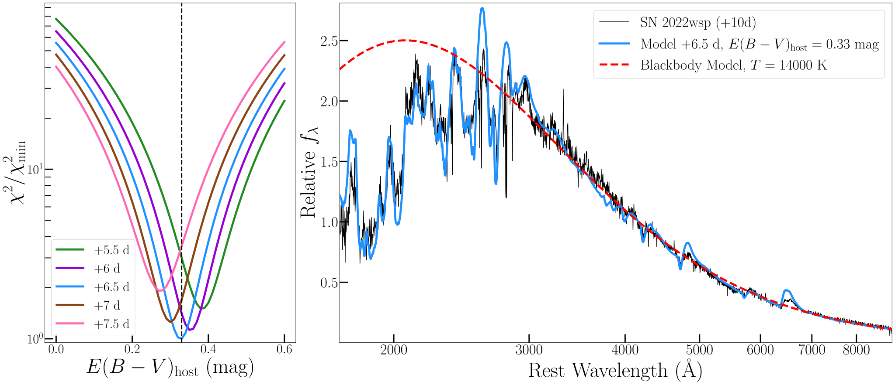
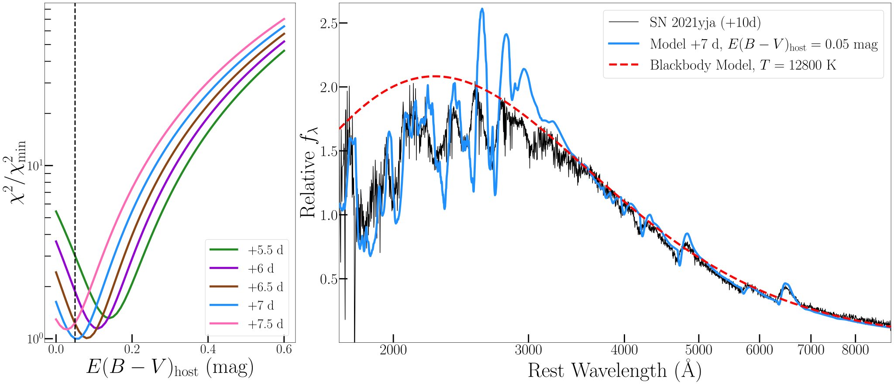
图注：II型超新星2022wsp（上）和2021yja（下）的模型相位与宿主消光联合拟合，两者观测相位均约10天，采用0.6 B的CMFGEN模型序列，1 B等于10⁵¹ erg。左图纵轴为相对全局最小值归一化的χ²，横轴为宿主E(B−V)（mag）；五条曲线对应最佳的五个模型相位，黑虚线标最佳宿主消光。右图横轴为静止系波长（Å），纵轴为相对通量；展示消光修正后的观测谱（黑）、最佳CMFGEN模型（蓝）及黑体（红），模型仅乘一个尺度因子。2022wsp最佳为6.5天、E(B−V)=0.33 mag，2021yja为7天、0.05 mag。
怎么看这张图：先看左图越早、越热的模型为何容许更大消光，再看右图联合紫外和光学后的残差。最佳模型比真实观测相位更早，说明仅调消光不足以消除同龄模型失配，并未直接测得更大前身半径。 用实际相位与消光联合检验支撑UV模型失配这一主要结果
来源与置信度：arXiv HTML；source verified；https://arxiv.org/html/2611.21742v1/22wsp_match.svg；https://arxiv.org/html/2611.21742v1/21yja_match.svg
9. A search for optical bursts from the repeating fast radio burst in the M81 globular cluster, FRB 20200120E
- 来源：arXiv / astro-ph.HE
- 链接：https://arxiv.org/abs/2611.21861
- 作者：V. S. Dhillon, L. G. Spitler, K. Lackeos, A. N. Mbole, W. J. Page, A. J. Brown, N. Castro Segura, M. J. Dyer
- 公告 / 来源日期：2026-11-18
- 阅读层级：相关简报
- 评分：novelty 7/10，importance 7/10，relevance 8/10，final 8.35/10
- 推荐理由：17:00逐篇摘要初筛：最近域外FRB同时光学射电上限有用，但仅一个射电脉冲且机制鉴别依赖假设。
中文题目：M81 球状星团 FRB 的同步光学搜索：毫秒级未检出限制了什么
问题、方法与结论：作者在2024年4月用GTC/HiPERCAM五色高速相机和Effelsberg同步观察FRB 20200120E，记录到一次射电流量 $0.14\pm0.01$ Jy ms、宽约79 μs的暴发。射电时刻位于11.98 ms光学曝光中央，排除了该事件落入读出死区。光学未见对应突发，消光修正后的五带合并 $5\sigma$ 流量上限为 $1.8\times10^{-3}$ Jy ms，光/射电流量比小于0.013；按3.63 Mpc距离计算的 $r_s$ 带各向同性等效能量小于 $5.4\times10^{36}$ erg。
意义与贡献：这个近邻重复源位于老年球状星团，为不同FRB环境提供检验。近距离将光学能量约束显著压低，同步射电定时又能精确选出应叠加的光学帧。该次射电暴较弱，所以最深的光学流量上限仍未成为最紧的光/射电流量比约束。
可借鉴之处：多色同时曝光有助于排除只落在一块CCD上的宇宙线。作者用暴发附近1000帧估噪声，按逆方差合并五带，并检查至60 s的重分箱。可复用的观测策略是稳定时间戳、核读出空档，再对多次射电触发叠加，降低同步短光学信号的噪声。
局限与关注点：合并上限采用近似平坦光谱，$5\sigma$ 是局地噪声门槛。Jy ms衡量每单位频率的流量，比值不能等同于带宽积分能量比；射电误差还未包含约10%的灵敏度系统项。单次未检出仍与磁层逆康普顿等模型相容，未排除磁星起源；球状星团环境也使年轻超新星遗迹模型需另核适用性。更亮射电暴或多次叠加才能进一步收紧辐射效率。
图 3

图注：FRB 20200120E射电暴前后10秒的HiPERCAM光变，从上到下为uₛ、gₛ、rₛ、iₛ、zₛ五带及合并数据；共733个采样点，帧间隔13.64 ms。横轴为太阳系质心修正的BMJD（TDB），纵轴为FRB孔径内已减天空、再减球状星团平均光的计数，没有作比较星修正；黑色竖虚线为Effelsberg射电暴时刻，最下面横虚线标推导上限所用的5σ水平。单帧有效曝光11.98 ms。
怎么看这张图：检查射电时刻附近是否有五带共同出现的突增，并与底部合并序列的门槛比较。图示为光学未检出；5σ是所选窗口的局地噪声门槛，不能把帧间隔当成曝光时长，或将平坦光谱假设下的合并上限用于任意光谱。 直接展示同步射电触发下的五带光学未检出证据
来源与置信度：arXiv HTML；source verified；https://arxiv.org/html/2611.21861v1/plot_lc_zoom_v4.svg
10. Probing Velocity-Dependent WIMP Dark Matter Annihilation in Large-Scale Structure
- 来源：arXiv / astro-ph.HE
- 链接：https://arxiv.org/abs/2611.22387
- 作者：Wen-Qing Guo
- 公告 / 来源日期：2026-11-18
- 阅读层级：相关简报
- 评分：novelty 7/10，importance 7/10，relevance 8/10，final 8.35/10
- 推荐理由：17:00逐篇摘要初筛：速度依赖暗物质湮灭交叉相关框架有新推广，但目前仍为预测。
中文题目：从大尺度结构的相关性追问暗物质湮灭：速度依赖留下哪些痕迹
问题、方法与结论：作者把暗物质湮灭率对相对速度的依赖加入宇宙暗晕模型，比较Sommerfeld型、$s$、$p$、$d$波四种情形，预测Fermi-LAT未分辨伽马背景与2MRS星系的互相关。$p/d$波偏重速度弥散较大的约 $10^{14}M_\odot$ 暗晕，Sommerfeld型偏重小晕；信号的空间聚集、红移分布和晕内亮度形状都随之改变。这是灵敏度预测，没有报告新暗物质信号或实测排除限。
意义与贡献：只改变总伽马亮度会漏掉空间信息：质量较大的晕更强烈地聚集，也容纳更多星系，因而改变相关谱的形状及单晕、双晕贡献。它为低速度矮星系之外的暗物质搜索提供互补目标，但不同速度模型不能只按同一总截面直接比较强弱。
可借鉴之处：方法上用各向同性速度分布与Jeans方程求晕内速度矩，结合星系占据模型、点源遮罩、光子噪声及LAT角分辨率。固定暗物质质量后，以归一化系数为单个附加参数，按作者采用的 $\Delta\chi^2=4$ 给出约95%预测上限；背景设为错向AGN和恒星形成星系，尚非重新拟合真实天图。
局限与关注点：数值结论依赖小尺度结构：最小晕质量从 $10^{-6}$ 升至 $1M_\odot$，Sommerfeld型信号可弱约百倍。该型采用无质量媒介子的理想极限，有限媒介子会使增强饱和；各模型还共用原为$s$波校准的子晕增强，未自洽计算不同子晕速度。混合分波也不能由一个固定速度指数概括，宜借鉴框架，谨慎引用灵敏度。
图 3
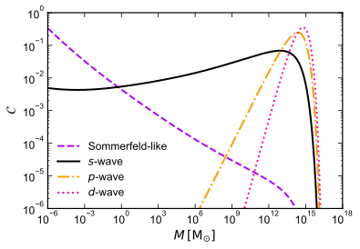
图注：红移z=0.05时，每个对数暗晕质量区间对速度依赖湮灭总信号的份额𝒞(z,M)。横轴为暗晕质量M（太阳质量），纵轴份额按对数质量积分归一化。紫、黑、橙、粉曲线分别表示Sommerfeld型、s波、p波和d波，对应速度指数−1、0、2、4。图为模型预测，未表示观测检出或上限。
怎么看这张图：比较各曲线主要权重落在哪个质量范围，而非把归一化曲线高低当作绝对伽马亮度。p、d波更偏重高速的大质量晕，Sommerfeld型依赖最小晕质量；这些质量权重再改变有效偏置和与星系的相关谱。 解释速度依赖如何通过不同暗晕质量改变聚集信号，避免重标度谱幅度的误读
来源与置信度：arXiv HTML；source verified；https://arxiv.org/html/2611.22387v1/Distribution_of_C.svg
11. A primordial heavy water reservoir in the outer solar system
- 来源：Science Advances
- 链接：https://www.science.org/doi/abs/10.1126/sciadv.aeg1602?af=R
- 作者：Lindsay P. Keller, Christopher J. Snead, Ming-Chang Liu, Kevin D. McKeegan
- 公告 / 来源日期：2026-11-11
- 阅读层级：相关简报
- 评分：novelty 7/10，importance 8/10，relevance 7/10，final 8.35/10
- 推荐理由：摘要初筛：含水IDP重氧同位素约束外太阳系冰库；重水指氧同位素而非氘。样本来源与混合模型需全文核验，贡献暂定明确新约束。 本轮复用11月16日已记录的类型/摘要筛查，全文验收状态单独记录。 11月18日复用已完成的同版本评分；全文与期刊日期另核。
中文题目：柯伊伯带尘埃中的重氧水库线索：矿物测量与原始水反推须分开
问题、方法与结论：作者联合分析12颗含水行星际尘埃的矿物、太阳高能粒子径迹和氧同位素。高径迹密度支持外太阳系来源；黏土和碳酸盐说明母体曾受水改造。离子探针测得的氧同位素总体不同于典型含水碳质球粒陨石，平均偏离地球质量分馏线约2.5‰。再假定无水非晶硅酸盐经特定反应变成含水矿物，用氧的质量守恒反推，所需水的氧18相对标准海水富集约155‰，是模型估计而非直接测到古老冰。这里“重水”指富含氧17、氧18，不是富氘水。
意义与贡献：这项工作把外太阳系尘埃的来源线索与实验室成分测量连起来，支持外盘曾存在与内侧物质混合有限的重氧水库。证据增强的是水库在特定反应模型下的存在可能性，并不直接测定其总质量、边界或隔离时间；土星形成压力障碍是作者提出的解释。
可借鉴之处：可借鉴的是同一微粒上组合来源指标、矿物反应和同位素，而不只比较一条丰度曲线。仪器处理需分离氧17与氢氧离子干扰，并核查标准样品的基质效应；推断还需给出前体材料组成与参与反应的氧比例。测量误差和前体假设误差应分开报告。
局限与关注点：样本只有12颗，前体组成并非逐颗直接测量，且水提供的氧只占反应产物的一小部分，反演会放大前体误差。作者仅计结构羟基，说明反推水同位素可作为上限估计；补充材料本轮返回访问检查页，未宣称复现其计算。本文也未直接观察到土星隔离过程，后续需更多样本与不同反应路径检验。
图2
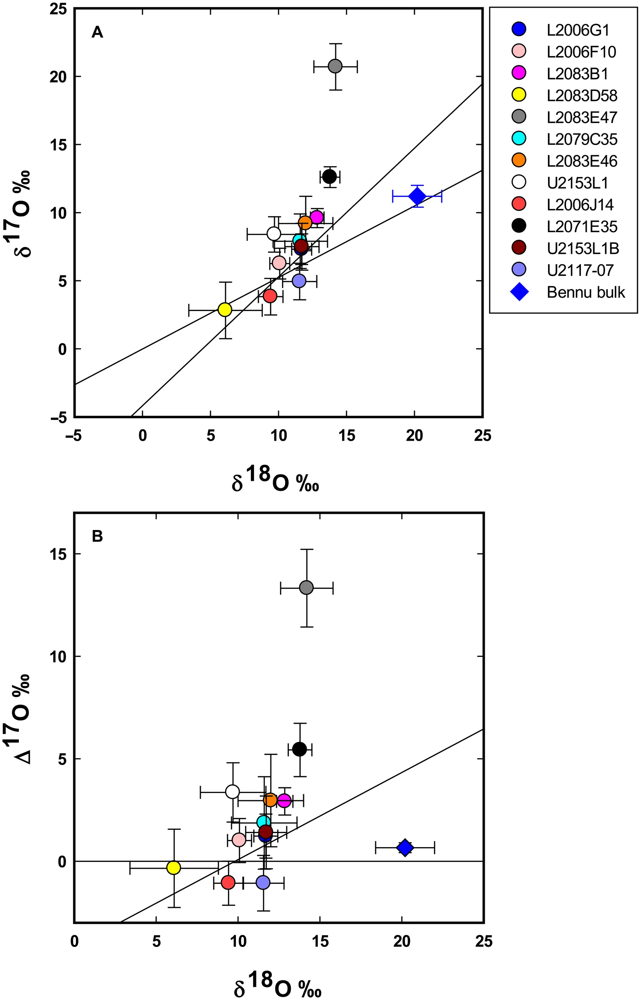
图注：含水尘埃的氧同位素组成。A横轴为相对标准海水的氧18偏差，纵轴为氧17偏差，单位均为千分数；不同颜色圆点为各尘埃，蓝色菱形为Bennu样品平均值，直线为地球分馏线及碳质球粒陨石无水矿物参考线。B改以偏离地球分馏线的Δ17O为纵轴；部分样本重叠。所有误差棒为2σ。
怎么看这张图：先看多数点与地球分馏线的相对位置，再看不同样本的散布及Bennu对比；这是矿物测量，原始水的组成还要经过反应模型反推。 呈现直接测量，避免把反演水库与实验数据混为一谈
来源与置信度：PMC original figure；source verified；https://cdn.ncbi.nlm.nih.gov/pmc/blobs/f17d/13753991/137e04501456/sciadv.aeg1602-f2.webp
说明
评分由 LLM 给出初评，再由本地阈值策略过滤；IACT、TeV 伽马射线和高能中微子天文学按重点方向处理。